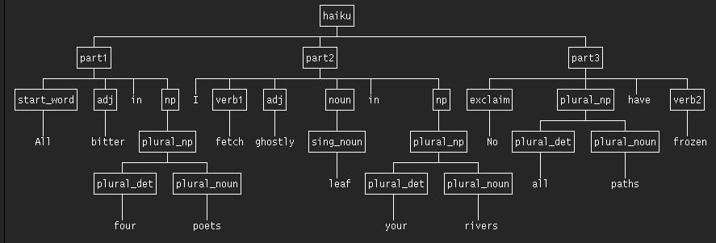

School of Computer Science
--
The University of Birmingham
In collaboration with
The University of Sussex:
Informatics Department
and Centre for Research in Cognitive Science
This file is
http://www.cs.bham.ac.uk/research/projects/poplog/examples/
Thanks to Tim Bateson (Houghton Kepier Sports College, Tyne and Wear)
all the tools required to run the examples below are
AVAILABLE FOR
USE FREE OF CHARGE, WITH OPEN SOURCE
in Linux (or in VirtualBox on Windows or Apple OSX, etc.)
as
described in
http://www.cs.bham.ac.uk/research/projects/poplog/ova/.
Enquiries to A.Sloman@cs.bham.ac.uk
(Free open source software, thanks to the Universities
of Sussex and Birmingham.)
Examples of General and AI Programming Teaching Materials
Illustrated using Poplog/Pop-11
In part this web site was inspired by my interactions with CAS,
the Computing at School
group, run by its members, with support from BCS (The British Computer Society)
and others.
Link to this web site:
http://www.cs.bham.ac.uk/research/projects/poplog/examples/
Why do or teach Thinky programming? (below)
Tips on how to teach thinky programming:
http://www.cs.bham.ac.uk/research/projects/poplog/examples/thinky.html
Video tutorials on some of this material:
http://www.cs.bham.ac.uk/research/projects/poplog/cas-ai/video-tutorials.html
Liberal copyright conditions for everything on this web site
NEWS 21 Jul 2012: the list of types of programming that was
previously included below, has now been moved to
a separate file, here.
NEWS 17 Oct 2011: CAS-AI:
Poplog/Pop11 resources for Computing at School (CAS)
Jump To Main Contents List
Programming tasks
There are different sorts of programming task that can be
distinguished, for which different programming languages and tools
may be suitable, and for which different mind-sets are required,
though these categories overlap to some extent:
This web site is mainly concerned with 'Thinky' programming,
described briefly in
the
"Kinds Of Programming For Learners" file and illustrated
with several examples
below, though that is not to deny the importance of other
kinds. Thinky programming is emphasised below because it seems to be
largely ignored in programming education in schools, and only a
subset of university courses in computer science include it, e.g.
in degrees, or courses, in Artificial Intelligence (AI) or
Computational Cognitive Science.
However thinky programming is very important for a range of other
disciplines, including psychology, linguistics, neuroscience,
biology (animal behaviour), linguistics, education and philosophy.
Below is a rough division of types of programming that learners can be
asked to do. No suggestion is made here that some are better or worse
than others. They all have their practical uses, and all can have some
role in education, though not all will be equally useful for all
learners. For example, some types may be too intellectually challenging
for a minority of learners whose rate of learning is slower and who find
mathematical thinking very difficult. Some types may be too
intellectually challenging even for the majority of learners. But that
does not mean they should not be taught if they can be of very great
benefit to a minority.
Managing those differences among learners has always been a challenge
for educators -- and some cope with the challenge better than others.
How to do that is not the topic of this web site, which deals with a
range of material some of which is relatively simple, while others will
be accessible only to high fliers.
Types of programming task for learners
NOTE 9 Jul 2012:
There is now a separate file containing the list of types, which
has been expanded beyond the list that was previously below. The new
file is
http://www.cs.bham.ac.uk/research/projects/poplog/examples/kinds-of-programming.html
Also accessible as
http://tinyurl.com/thinky-ex/kinds-of-programming.html
or
http://tinyurl.com/thinky-ex/kinds
Why do or teach Thinky programming?
Why educate?
After reading all the recent (2011-12) online and broadcast
discussions lamenting the demise of programming education in UK schools
you might think the only reason to learn about programming is that the
nation needs more coders to make things work and to build our digital
economy. E.g.
http://www.rblyon.com/blog/?cat=4
Who Will Build the UK's Future Digital Economy? ...?who ?...WHO ?
But is that the only or even the main reason for educating our children
(who will later educate our grandchildren....)?
What about educating them to ask, and find answers to,
questions like: How does that work?
Or more specific questions: How could an ant find its way back to the
nest? Does a magpie understand what it is doing when it adds another
twig to its part-built nest?
What is understanding what you are doing, and how far could a
nest-builder get without understanding? (Compare spiders building webs,
bees making honeycombs and termites building cathedrals.)
Could
a goldfish long for its mother -- and if not why not?
Shouldn't young learners ask questions about themselves: Why couldn't I
understand language when I was born and what changed in me to enable me
to talk, understand, read and write English, French, Urdu, Afrikaans, or
whatever?
Could a young robot learn any of those?
Or questions about what biological evolution did: What had to change in
genomes of our ancestors to transform animals that could not do science,
or mathematics, into animals that could? What goes on in a child who
starts to learn that all the things she has been playing with, bumping
into, eating, wearing, walking on are in a space, and a lot of features
of that space were characterised economically by an ancient Greek (or
virtual Greek?) called Euclid? What is it about how our minds (or
brains) work that enables us to discover or to understand a proof that
the three angles of a triangle must add up to a straight line?
Could a suitably programmed machine, looking at the evidence available
to Newton, have come up with Newton's laws of motion?
How is that ability related to the ability to look at someone about to
climb a ladder and recognise that the ladder is at a dangerous angle?
What sort of animal or machine can understand, or compose a poem?
Or compose a tune and evaluate it? (Look up "David Cope".)
Or paint a creative new picture? (Look up "Harold Cohen"
and his drawing/painting program AARON.)
Or design a new kind of house? Or invent a game? Or teach others how to
do something they can't yet do? Or discover that there are infinitely
many prime numbers?
Or experience visual ambiguities and illusions?

Could a machine flip between two interpretations of this picture?
What else would be needed to enable it to experience the fact that
its experience has changed?
Experiments on "change blindness" show that humans don't always
detect changes in their experiences
http://nivea.psycho.univ-paris5.fr/ECS/ECS-CB.html
People who have never learnt to design experiencing machines don't
realise that mechanisms providing the ability to experience things
may not provide the abilty to experience changes in experience: that
requires additional mechanisms. Why?
What needs to be in a machine or animal to allow it to have preferences,
or goals, or conflicting goals, or the intention of carrying out a plan?
What mechanisms are required in order to be able to interpret the
actions of others as arising out of preferences, goals, or plans?
Could a machine do that? Could a robot have a "theory of mind" that
enables it to work out when other machines will have false beliefs?
http://en.wikipedia.org/wiki/Theory_of_mind
(This is an area where science and game technology potentially overlap.)
One way to appreciate both the content of such questions and
possible ways of finding deep explanatory answers is to give
young learners experience of designing, implementing, testing,
debugging, analysing, extending, explaining, comparing, justifying
working systems that do something humans or some other animals can
do.
Initially, simple forms of such competences can be explicitly
programmed. Later projects can investigate learning mechanisms? Should a
learner use logical reasoning, or associative neural nets, or production
rules, or all of these, or something else?
I am not opposed to teaching five to ten year old children the fun, the
challenges, and the discipline involved in making "bumpy" programs work.
But if we can inspire a subset of them to go on and explore techniques
of "thinky" programming, then, perhaps, when they grow up, we shall have
profound new advances in fields that study very complex natural
information processing systems, but are currently studied and taught by
people how have never built or debugged or explained a working
information processing system in their lives: e.g. most psychologists,
neuroscientists, educationalists, psychiatrists, linguists, social
scientists, economists, biologists, philosophers, and politicians, among
others.
We have missed major opportunities in the last few decades. Are we going
to continue to miss educational opportunities by focusing only on the
economic justifications for teaching computing? Is making money the only
really important thing to live and learn for?
As for the economic applications of advances in AI (Artificial
Intelligence) those won't be achieved if the vast majority of people who
have to be employed on AI projects have never previously encountered AI
programming and know nothing about its history (apart from the shallow
science fiction that tells you nothing about how to build a wicked or
benevolent machine).
See also
Why teaching beginners requires powerful systems
Relating Programming to Biology, Cognitive Science, Philosophy
The AI Topics website of AAAI
AI in the News
Proposals for AS/A-level courses in AI/Cognitive Science
INTRODUCTORY CONTENTS LIST
(The full contents list is
below.)
NOTE: This is work in progress -- comments and suggestions
welcome.
Background
This directory contains a small subset of examples of teaching
materials based on the
Pop-11 programming
language which is the core language of
The Poplog System.
Pop-11 is the latest version of the language
POP-2, originally
developed in Edinburgh for research in
Artificial Intelligence
(AI) around 1972, and used in the
Freddy II Robot
among other things.
Pop-11 was developed at Sussex University, from about 1976, to
support teaching in AI,
Cognitive Science,
and general programming at all levels, from absolute beginners to
PhD students, as well as being used for research and development. It
was used for its own development (a substantive challenge,
summarised in part
(here),
and also for several commercial products, including
Clementine, now part of
IBM's business software systems.
If you want to skip the introductory blurb and look at examples,
jump to the contents list.
This web site has two aims
The examples in the list below (still under development) are
expanded versions of what was previously in the
'Teaching' section
in the 'Free Poplog'
overview.
They range from very elementary examples through increasingly
sophisticated examples (including use of an
agent toolkit
included with Poplog).
The examples focus on tasks that have a rich 'external semantics'
for the learner, i.e. the programs are about something the learner
could think about and reason about independently of doing any
programming about it.
This need for 'external semantics' was
the original motivation for teaching using the programming language
LOGO
(around 1967) to drive a real or simulated 'turtle with a pen' to
move about, drawing pictures. But there are many other domains that
can interest beginners, some inherently involving static or moving
shapes and pictures, others not. For example, some may be based on
giving the computer the ability to solve
familiar puzzles, simple board-games or pencil and paper games, or
to analyse or generate,
simple sentences made of familiar words, understood or produced by a
simple 'chatbot', or simulation of a familiar object such as a
coin-operated drink dispenser, modified to give it some intelligence
to help users.
Creative teachers will be able to design domains and tasks that
programming language designers would not have thought of, and a good
teaching environment should support such teachers.
The sample will be extended from time to time. Suggestions for
topics to be included are welcome.
The educational philosophy underlying this material is concerned not
only with 'skills' (which dominate much thinking and discussion of
computing education) but also with expanding knowledge and
understanding,
by clarifying concepts, theories, and problems
relating to understanding and modelling complex systems in our
environment, including the information processing capabilities of
humans and other animals.
Skills have their place, and are important, but providing them is
not the top-level goal. Rather they are subsidiary to the main
goals, as memorising multiplication tables is subsidiary to
understanding numbers.
For more on this see these two sections
below:
Further information about Poplog and Pop-11 is
available below, after the examples.
All the examples (and a lot more) can be run using the Poplog
system. Installing it on linux is very simple. Installation on
Windows is possible if you first install VirtualBox and then install a
poplog inside a virtual linux as described here:
http://tinyurl.com/2011ova.
A simple tutorial introduction to linux/unix can be found here:
https://supportweb.cs.bham.ac.uk/documentation/tutorials/docsystem/build/tutorials/unixintro/unixintro.html
This document and the documents and software referred
to in it (all open source and free) are subject to the
(very liberal)
Poplog copyright notice.
Partial list of types of interactive programming exercises
The following are included in the examples below:
-
Symbolic programming, using, for example, lists
of words, manipulated with the help of
a pattern matcher,
-
Conventional numerical programming including vectors of numbers,
arrays, integers, floating point numbers, and if desired also
rationals and complex numbers,
-
Practice in breaking up complex programs into separate procedures,
which can be tested separately, traced separately, and sometimes
re-used in code libraries if sufficiently general.
-
Use of recursion to provide elegant solutions to complex problems
not easily handled by loops,
-
2-D graphical programming, including construction of pictures using
logo-like turtle geometry commands, and also use of libraries to
generate various kinds of graphs of functions, and also graphical
interfaces to programs of various kinds.
-
Introductions to natural language processing, starting with pattern
matching in
Eliza-like
programs, moving on to use of grammars, and use of natural
language as an interface to various kinds of 'back-end' programs,
e.g. games, question answering, problem solving.
-
Introductions to rule-based programming, object-oriented programming
(using inheritance and methods), logic programming, use of a simple
(in core) database as a manipulable store of knowledge.
-
Using program libraries provided in Poplog or provided locally by
teachers or project groups.
-
Learning to produce and test libraries containing code and
documentation that can be used by others.
-
Some sample lecture notes on general programming and AI programming
in Pop-11 are available
here (to be revised).
-
"Thinky" game playing programs.
More information about what Poplog is and what it provides can be
found here:
http://www.cs.bham.ac.uk/research/projects/poplog/freepoplog.html#whatspoplog
Experience has shown that really able students can follow links in
the Teach and Help files and, by reading and trying things out,
teach themselves a great deal about programming, software
engineering, computer science and AI. Different learners will prefer
different routes through the concepts, techniques, and tasks that
are available. Often such students become a powerful teaching
resource, with benefits both to themselves and to other students and
the teachers.
EXPERIMENTAL (FIRST DRAFT) VIDEO PRESENTATIONS
I have started making videos presenting examples of some of the
materials listed below, which are available on YouTube.
http://www.cs.bham.ac.uk/research/projects/poplog/cas-ai/video-tutorials.html
Some of the original videos are available (in '.ogv' format)
here.
The tutorials are unscripted and unpolished.
SUMMARY OF MAIN CONTENTS
Warning:
the examples given below are not intended to be examples of
self-contained teaching materials.
Rather they are intended to show
the spread of sophistication from very simple (even trivial)
programming to highly sophisticated AI modelling, all supported in a uniform way by a
single teaching-learning environment in which the learner (and
teachers) can 'grow'.
SPECIMENS OF AVAILABLE TEACHING MATERIALS AND TEACH FILES
Note: experienced programmers wanting to find out about Pop-11 may
find these examples fairly tedious.
If you are an experienced programmer,
reading the Pop-11 primer may be more informative for you:
JUMP TO CONTENTS LIST
The "river world" -- an introduction for beginner programmers
(Getting the computer to solve a puzzle humans can solve.)
An example very elementary introductory "teach file" on the river-crossing
problem is TEACH RIVER (originally the brain-child of Max Clowes in the
late 1970s).
This has been used to teach absolute beginners, including quite young children
elementary programming (as long as they can read and type) though they first
have to solve a non-programming puzzle themselves.
This is based on a well-known puzzle:
How can a man get a fox, a chicken and a bag of grain from the left bank of
a river to the right bank without the fox eating the chicken or the chicken
eating the grain, given that the boat can hold only two things (including
the man), and only the man can row it across the river, and only the
presence of the man can prevent unwanted consumption.
Make sure that you have worked out a solution to the problem (e.g. using pencil
and paper) before doing the exercises in the teach file.
Students can read the TEACH RIVER file into the poplog editor Ved, then "mark
and run" the code portions to see what happens.
(Or they can read the file in another editor or browser and paste the code into
the pop11 command prompt, after starting pop11 in a console window.)
For example, after the river library has been compiled, using the command
lib river
the 'start();' command produces an initial state of the world, and displays it.
In that command the 'doit' brackets are needed to tell pop11 to run the
start procedure even though no extra arguments are needed for start to run.
start();
prints out:
** Here is the state of the river-world:
** [chicken fox grain man ---\ \_ _/ _________________ /---]
Various commands are available, provided by the library, including
putin( thing )
takeout( thing )
getin()
getout()
crossriver()
where thing can be fox, chicken or grain.
after 'putin(grain);' the student sees
putin(grain);
** Here is the state of the river-world:
** [chicken fox man ---\ \_ grain _/ _________________ /---]
The state of the world can also be shown by printing out the current Pop-11
database, which is used to hold information about the current state of the
world, and is changed by actions performed:
;;; the 'pretty print' arrow ==> prints complex lists in a tidy way
database ==>
** [[grain isat boat]
[boat isat left]
[chicken isat left]
[fox isat left]
[man isat left]]
Note that the database is just a list of lists containing words.
The computer does not understand the words in those lists, but the programs in
the library are made to manipulate them as if it did.
The tempting fatal mistake can be demonstrated -- try getting into the boat
after putting in the grain:
getin();
** Here is the state of the river-world:
** [chicken fox ---\ \_ man grain _/ _________________ /---]
;;; MISHAP - DISASTER
;;; INVOLVING: fox has eaten chicken TOO BAD
;;; FILE : river
;;; DOING : river_mishap eat checkeat getin runproc
** Here is the state of the river-world:
** [fox ---\ \_ man grain _/ _________________ /---]
The disaster is confirmed by the absence of the chicken from the
database:
database ==>
** [[man isat boat] [grain isat boat] [boat isat left] [fox isat left]]
and of course the 'picture' printed out, showing no chicken:
** [fox ---\ \_ man grain _/ _________________ /---]
JUMP TO CONTENTS LIST
Putting repeated sequences into re-usable subroutines
After a full solution to the river problem has been constructed and run as a
sequence of commands, 'TEACH RIVER' invites learners to combine the operations
so as to build a specification for a process to solve the whole problem, namely
getting everything to the right bank. That code sequence can be bundled into a
named procedure.
They are then asked to look at recurring patterns in the solution, and to
rewrite the code so as to make it clearer, more compact and more modular. An
example would be the recurring sequence
getin();
crossriver();
getout();
That pattern could be used to define a procedure called cross(), thereby
shortening the program to solve the problem.
A new pattern may then become obvious after that, in sequences like:
putin(fox);
cross();
takeout(fox);
and
putin(chicken);
cross();
takeout(chicken);
inviting the type of abstraction that requires use of a procedure
with an input parameter:
define move (thing);
putin(thing);
cross();
takeout(thing);
enddefine;
Those two procedure definitions will dramatically reduce the length of the
complete program required to go through all the steps of a solution to the
puzzle.
Learning to see patterns in code that invite types of abstraction
supporting increased modularity and reusability is an important kind of
intellectual development. It can, of course, also be done with graphical
programming, but there is a limit to the generality achievable that way.
JUMP TO CONTENTS LIST
TEACH RIVER is just one example among many
Of course, the above example is very limited: there are only a few objects, a
small number of actions, and little scope for ongoing interaction. That is
because it was intended originally merely as a small exercise to introduce some
fundamental programming constructs.
However the principle that it illustrates is that a teacher can define a
micro-world making use of concepts that intended learners already understand,
where every possible state of the world is represented by the state of the
Pop-11 database and events and actions in the world can be represented by
procedures that add and remove database items. In some case such a world is also
representable graphically, as shown in the river example, and the use of two
forms of representation of what the program does, with principled relations
between them can be an important feature of the learning process.
JUMP TO CONTENTS LIST
A benefit of the textual interface
This also demonstrates an advantage of textual over graphical learning
interfaces: textual results produced by several textual commands can easily be
preserved and compared, so that similarities and differences can be studied.
Graphical interactions, with pictures of recognizable objects moving around on a
screen, can be much more engaging, but since graphical displays constantly
replace their contents, the task of thinking about and comparing the results of
the last ten graphical commands (except in simple cases where the commands
produce cumulative results) requires an extraordinarily good visual memory, or
tools to replicate the interface on demand and repeatedly run the commands in
slow motion in parallel so that two or more processes can be compared as they
run.
(A partial solution for the case of turtle graphics is the Pop-11 polypanel
interface shown here,) which allows parameters for a "polyspiral" command
to be altered graphically and the program re-run at varying speeds, to help make
it clear how the parameters chosen affect the construction of the picture.)
Using textual input and output, both teachers developing teaching programs and
documentation, and students making use of the materials, can copy commands and
change parameters or lists of words in the code examples and then instantly
re-run the code, with both the commands and the output saved in one or more text
files or editor buffers, making it possible, and in simple cases easy, to look
back at and compare different episodes (as in the "riverworld" example above.
For teachers, this makes development of teaching files littered with tested code
examples relatively quick and easy (at least compared with authoring systems
that require the teacher's input to be compiled into some teaching engine which
has to be restarted and then run).
The interleaving of instructions with code that is editable and runnable by
students, as illustrated above, can facilitate rapid exploratory learning -- by
both teachers and learners -- making teachers learners!
In particular, after testing their examples, teachers can select portions of the
examples to remove, presenting students with gaps in code fragments, so that
students can try various ways of filling in the gaps, and run the commands to
see what happens (put the fox, chicken or grain in the boat, get into the boat,
cross the river, get out, take out what is in the boat, etc.). Gifted teachers
will learn which "size" gaps are suited to learners of different sorts.
JUMP TO CONTENTS LIST
The Pop-11 database and the matcher
The pop-11 database package provides a collection of mechanisms for searching
the database using patterns and the Pop-11 matcher to select items.
Things can be added to the database or remove, in a way that depends on the
results of searches.
The database also provides simple pattern-based mechanisms for iterating over the database.
E.g. after the start() command introduced above, and explained in TEACH RIVER,
this instruction
vars x; ;;; or 'lvars x;' inside a procedure definition.
foreach [?x isat left] do
[The ^x is on the left bank] =>
endforeach;
could print out
** [The boat is on the left bank]
** [The chicken is on the left bank]
** [The fox is on the left bank]
** [The grain is on the left bank]
** [The man is on the left bank]
After some of the actions listed above have been performed, e.g.
putin(chicken);
cross();
takeout(chicken);
the same foreach command would print out different information.
(What should it print out?)
It is also possible to iterate over combinations of database items. So,
instead of a "foreach" loop with a single pattern (as above) a "forevery" loop
can be used with a list of patterns to be matched consistently with database
items in different ways:
vars thing1, thing2, place;
forevery [ [?thing1 isat ?place] [?thing2 isat ?place] ] do
if thing1 /= thing2 then
[The ^thing1 and the ^thing2 are both at ^place] =>
endif
endforevery;
could print out something like this:
** [The boat and the chicken are both at left]
** [The boat and the fox are both at left]
** [The boat and the grain are both at left]
** [The boat and the man are both at left]
** [The chicken and the boat are both at left]
** [The chicken and the fox are both at left]
** [The chicken and the grain are both at left]
.... and so on up to ....
** [The man and the grain are both at left]
After the commands
putin(chicken);
getin();
crossriver();
getout();
takeout(chicken);
The above 'forevery' loop would print out
** [The chicken and the man are both at right]
** [The chicken and the boat are both at right]
** [The man and the chicken are both at right]
** [The man and the boat are both at right]
** [The boat and the chicken are both at right]
** [The boat and the man are both at right]
** [The fox and the grain are both at left]
** [The grain and the fox are both at left]
Students could learn the need for the test in the "if" expression before the
print command, by first trying it without that test.
They could then think about how to prevent the duplication in information
presented because, for example, the first and third pieces of output give the
same information (because of the semantics of the example), and therefore should
not both be printed (along with other duplications):
** [The chicken and the man are both at right]
.....
** [The man and the chicken are both at right]
NOTE: When the above code fragments are included inside procedures, the
use of vars should be replaced with lvars (to make the variables local)
and all pattern expressions (lists containing "?" or "??") using those variables
should use the pattern prefix "!" to make the pattern variables access the local
variables.
For more details concerning this see TEACH VARS_AND_LVARS
List processing and intelligent systems
Pop-11 has a great deal of support for programming using lists, which can
contain words, numbers, strings, lists, and other entities. Lists provide a very
general mechanism for storing and manipulating information, and Pop-11 provides
some powerful tools for using them, such as a list pattern matcher, and tools
built using it.
List processing mechanisms have been found very useful in Artificial
Intelligence, in implementing systems that process natural language, make plans,
solve problems, reason logically, discover analogies, interpret images, and many
more. For that reason we start here with examples of list processing, then show
how lists can be used in some "toy" AI systems.
Pop11 can also do more conventional things, including arithmetical computations,
and 2-D graphics (e.g. Logo turtle graphics, demonstrated below).
Lists also play a central role in other languages designed for AI and more
generally for symbolic computation, e.g. Lisp, Scheme and Prolog.
Introductory examples
Here is a collection of little examples which illustrate some of the basics of
list processing in POP-11. If you have access to a Poplog system, you can try
the following Pop-11 commands and see what happens, then edit the commands and
redo them, to see how the results change:
vars list;
[1 2 3 4 5] -> list;
;;; we use "=>" to print out a Pop-11 value (preceded by two asterisks)
list =>
** [1 2 3 4 5]
The first line declared a variable called LIST,
vars list;
The next line assigned a list of numbers to it,
[1 2 3 4 5] -> list;
then the third line used the print-arrow to print out the value of the
variable LIST:
list =>
Now try assigning a different list of numbers:
[1 2 3 4 5 6 7 8 9 10 11 12 13 14] -> list;
list =>
** [1 2 3 4 5 6 7 8 9 10 11 12 13 14]
Using a loop inside list-brackets to create a list of numbers
Typing long lists of numbers can be tedious. We can use a program to generate a
list of numbers by putting a loop instruction inside a special version of the
list brackets [% ... %] like this:
vars num;
[%
for num from 1 to 25 do num endfor
%] -> list;
list =>
;;; that prints out the following:
** [1 2 3 4 5 6 7 8 9 10 11 12 13 14 15 16 17 18 19 20 21 22 23 24 25]
Lists can contain other other things, not only numbers.
Lists do not have to contain numbers: Pop-11 list contents are not restricted to
any type (as would be the case in some programming languages).
For example, this is how to create a list of words, entities indicated by
"quote" marks:
[% "the", "cat", "ate", "the", "mouse" %] -> list;
Pop-11 allows that to be abbreviated as follows:
[the cat ate the mouse] -> list;
That can be printed, as before:
list =>
** [the cat ate the mouse]
We can reverse the list using the procedure rev, and print out the result:
rev(list) =>
** [mouse the ate cat the]
NB: the original list is unchanged. The procedure rev produces
a new copy of the original, with the items in a different order.
Work out its length
length(list) =>
** 5
and the length of the reversed list:
length(rev(list)) =>
** 5
Sort the contents into alphabetical order
sort(list) =>
** [ate cat mouse the the]
Create a palindrome by concatenating the original list with its reversed
version using '<>' to do the concatenating:
list <> rev(list) =>
** [the cat ate the mouse mouse the ate cat the]
and compute the length of that
length( list <> rev(list) ) =>
** 10
and sort it
sort( list <> rev(list) ) =>
** [ate ate cat cat mouse mouse the the the the]
Notice that sorting the list in this way does not remove duplicate entries.
Later we'll see how to 'prune' a list, to remove the duplicates.
Notice that sort can also be given a list of numbers to sort:
sort( [99 3 4 5 88 6 5 4 22 3 4] ) =>
** [3 3 4 4 4 5 5 6 22 88 99]
including mixed integers and decimal numbers
sort( [99 3.4 4 2.568 88.888 6 5 4.235 0.22 1.3 4.0] ) =>
** [0.22 1.3 2.568 3.4 4 4.0 4.235 5 6 88.888 99]
Checking the contents of a list using member and the Pop-11 matcher
Previous examples showed how to construct, combine, reverse, sort and transform
a list.
Sometimes it is useful to be able to check what is in a list. One way
to do that is to use the Pop-11 procedure (or function) member, which
takes an item and a list, and returns true or false:
member("cat", [the angry cat chased the dog]) =>
** <true>
member("dog", [the angry cat chased the dog]) =>
** <true>
member("cow", [the angry cat chased the dog]) =>
** <false>
What should this produce: true or false?
member("the", [the angry cat chased the dog]) =>
In fact member does not care how many times an item occurs in the list, as
long as it occurs.
Sometimes mere membership is not what you are interested in. Suppose you
want to know whether the word "cat" occurs before or after the word "dog":
you can then use the pop11 matcher with a pattern that matches only lists
containing those two words with "cat" occurring before "dog".
[the angry cat chased the dog] matches [== cat == dog == ] =>
** <true>
[the angry dog chased the cat] matches [== cat == dog == ] =>
** <false>
[the angry dog chased the cat and mouse ] matches [== dog == cat == ] =>
** <true>
The element "==" will match any number of items, 0, 1 or more, no matter
what they are. If we want to know if there are exactly two words between
"cat" and "doc" we can use the symbol "=" to match exactly one item:
[the angry cat chased the dog] matches [== cat = = dog == ] =>
** <true>
[the angry cat chased only one dog] matches [== cat = = dog == ] =>
** <false>
Will this one produce true or false?
[the angry cat chased only one dog] matches [== cat = = = dog == ] =>
Using the matcher to remember what was found in a list
Sometimes you want to know not only whether something occurs in a certain
location but what occurs there. The pattern matcher can do that if you put
variables in a pattern, as follows.
Let's declare some variables for items and for lists.
vars item1, item2, list1, list2, list3;
(Actually, the names could be anything: Pop-11 doesn't care. So I could
have used
vars x1, y, boat1, boat2, boxes;
But it usually leads to clearer programs if you give variables names
reflecting their use.)
So we can ask the matcher whether exactly two items occurred between
"cat" and "dog" and, if so, what they were:
vars item1, item2;
[the angry cat chased the dog] matches [== cat ?item1 ?item2 dog == ] =>
** <true>
Note the use of the "?" symbol in ?item1 ?item2 to indicate that we are
using item1 and item2 as variables to be given values, not as words to be found in
the original list, like "cat" and "dog".
Because the match result was <true> we can ask what the items were:
item1 =>
** chased
item2 =>
** the
[Pop-11 prints out words without the quotes "".]
Or we can ask for both together
item1, item2 =>
** chased the
If we don't know how many items occurred in a region of a list, we can
ask the Pop-11 matcher to make a list of the items, using a "segment
variable" indicated by using the double query before a variable name, as in
"??list1" below:
For example, if we want to know what words occurred before "cat" we can
use this
vars list1;
[the angry cat chased the dog] matches [??list1 cat == dog == ] =>
** <true>
And because the result is true, it's worth looking at the new value
of list1:
list1 =>
** [the angry]
We can check several different segments of a list, using different
segment variables, e.g.
vars list1, list2, list3;
[the angry cat chased the hungry dog] matches [??list1 cat ??list2 dog ??list3] =>
** <true>
and we can find the contents of the three lists:
list1, list2, list3 =>
** [the angry] [chased the hungry] []
The third list is empty, because there was nothing after "dog".
We can use the found list segments to create a new list, by using
^^list1 to insert the contents of list1 into a new list, e.g.:
[^^list1] =>
** [the angry]
We can do that for list1, list2, and list3 to build a new list containing all
of them as list segments:
[^^list1 mouse ^^list2 elephant ^^list3] =>
** [the angry mouse chased the hungry elephant]
Because list3 is empty, nothing is inserted where it occurs.
How could you use list1 and list2 to create a list containing this?
[the angry eagle chased the hungry snake]
There are many more examples of how to use the list matcher in Poplog teach files
including 'TEACH MATCHES', and examples using the Pop-11 database,
for example the River World demo below.
JUMP TO CONTENTS LIST
Using the Pop-11 matcher to implement a simple chatbot
A chatbot is a program that is capable of holding a conversation with a user,
which may use text or spoken language. Many Chatbots are very boring because
they are very limited in what they can respond to and what they can say in
response. A chatbot usually does not understand anything that the user types in
or that the chatbot types in response. However, it is possible to have a chatbot
that understands a little about a small subset of the world and can talk about
that.
However, most chatbots depend on the programmer anticipating the sorts of things
that could be typed in and preparing suitable responses. In some cases the
response could be based on some of the words actually typed in, giving the
illusion that the chatbot understood what it read in. An example chatbot that
can use patterns to work out how to respond is the Pop-11 Eliza, which anyone
can interact with on the internet:
http://www.cs.bham.ac.uk/research/projects/cogaff/eliza/
An example of an architecture for a chatbot:
When designing a complex program that puts a number of capabilities together it
is useful to think of the program as having an "architecture". For example, when
a chatbot is running there are typically at least three things interacting,
o a User (the human using the program)
o an Interface (a part of the system to read in what the user types and
print out the machine's answers).
o an Inference Engine (a part of the system that works out what answer
should be given in response to what the user last typed in.)
We can represent the architecture diagrammatically:
*------* --- > --- *---------* --- > --- *----------------*
| USER | |INTERFACE| |INFERENCE ENGINE|
*------* --- < --- *---------* --- < --- *----------------*
The interface is a sub-program which prints out a greeting, then
repeatedly reads in a sentence and prints out a sentence, until the
user types "bye". Then it prints out a farewell message and stops.
In order to decide what to print out it consults the inference
engine.
We shall give a very simple example of how to design an inference
engine -- one that really knows nothing and doesn't really do any
inference, but merely pretends to.
The chatbot inference engine (version 1)
We first define a very stupid and simple inference engine for testing the
interface designed below:
define inference_engine(sentence) -> response;
;;; takes in a list of words and responds by producing a list,
;;; assigned to the output variable 'response'
[Very sorry: I cannot answer this ^sentence] -> response
enddefine;
Notice that this does not directly print out its response. It returns it as a
result, to be communicated to whatever invoked this procedure. We can test it
with some silly examples:
inference_engine([Hi]) =>
** [Very sorry : I cannot answer this [Hi]]
inference_engine([Will you be my friend?]) =>
** [Very sorry : I cannot answer this [Will you be my friend ?]]
Later we can make this more intelligent.
(You could vary this initial response for your first tests.)
The chatbot interface (version 1)
The interface could be defined thus, using the Pop-11 procedure readline, to
read in a list of words typed by the user.
It invokes the procedure inference_engine defined provisionally above, to be
defined better later on.
We use 'lvars' for local variables --
accessible only within the procedure in which they are declared.
define interface();
;;; This procedure does not take any input when it starts.
;;; it repeatedly reads in something typed by the user,
;;; gets a response from inference_engine, then prints out
;;; the response.
;;; It checks whether the user wants to stop, and if so prints
;;; a final message and stops.
;;; we need two variables, to be used repeatedly.
lvars sentence, reply;
repeat forever
[Please type something and end by pressing the RETURN key] =>
readline() -> sentence;
[This is what you typed in:] =>
sentence =>
;;; get the reply from the inference engine
inference_engine(sentence) -> reply;
;;; and print it out
[This is my reply] =>
reply =>
;;; we can test whether to stop now
if sentence = [bye] then
;;; terminate the loop
quitloop();
endif;
endrepeat;
;;; quitloop sends the program here:
[This consultation is free. See you later I hope.] =>
[Bye for now] =>
enddefine;
Testing interface version 1 and inference engine version 1
;;; Start the interface
interface();
Here is what a test interaction might look like. The lines that start
with the prompt simple '?' contain what the user typed in.
Everything else was printed out by the program.
** [Please type something and end by pressing the RETURN key]
? Hello. I need some help.
** [This is what you typed in :]
** [Hello . I need some help .]
** [This is my reply]
** [Very sorry : I cannot answer this [Hello . I need some help .]]
** [Please type something and end by pressing the RETURN key]
? You are very long winded
** [This is what you typed in :]
** [You are very long winded]
** [This is my reply]
** [Very sorry : I cannot answer this [You are very long winded]]
** [Please type something and end by pressing the RETURN key]
? bye
** [This is what you typed in :]
** [bye]
** [This is my reply]
** [Very sorry : I cannot answer this [bye]]
** [This consultation is free . See you later I hope .]
** [Bye for now]
;;; For now, let's ignore the fact that spaces are inserted before the colon and
;;; the period.
We can improve the inference engine by making use of the Pop-11 matcher.
The chatbot inference engine (version 2)
This version of the inference engine is a little more flexible than version 1,
but it is still very stupid and simple.
It makes use of a multi-branch conditional instruction which has a collection of
tests (using if or elseif, and responses based on the tests, indicated by then.
The end of the conditional is indicated by endif.
define inference_engine(input) -> result;
;;; takes in a list of words and responds by producing a list,
;;; assigned to the output variable 'response'
;;; we need some variables for use by the pattern matcher
lvars x, y;
;;; notice that the patterns are now all preceded by "!". This is to
;;; make them work with the local variables defined using "lvars" in this
;;; procedure.
if input matches [i hate == ] then
[perhaps you hate yourself] -> result;
elseif input matches ! [are you ??x ] then
[do i seem ^^x] -> result;
elseif input matches ! [i ??x you] then
[perhaps in your fantasy we ^^x each other] -> result;
elseif input matches ! [??x is ??y] then
[what if ^^x were not ^^y ? ] -> result;
elseif input matches [bye] then
[I have enjoyed our meeting ] -> result;
else
;;; input not recognized -- this is the default response.
[please go on] -> result;
endif;
enddefine;
Since we have used the same name for the inference engine as before, when this
definition is compiled it will override the previous definition. It does not
matter that we have altered the input and output variables to be 'input' and
'result' instead of 'sentence' and 'response' as before.
We can give this some tests
inference_engine([the sky is blue]) =>
** [what if the sky were not blue ?]
inference_engine([i like talking to you]) =>
** [perhaps in your fantasy we like talking to each other]
Ideally, all the options should be tested. We can now do that by running the old
interface program.
interface();
That produces this interaction (where lines starting '?' were typed
in by the user):
** [Please type something and end by pressing the RETURN key]
? are you my friend
** [This is what you typed in :]
** [are you my friend]
** [This is my reply]
** [do i seem my friend]
** [Please type something and end by pressing the RETURN key]
? i hate obscure answers
** [This is what you typed in :]
** [i hate obscure answers]
** [This is my reply]
** [perhaps you hate yourself]
** [Please type something and end by pressing the RETURN key]
? i really really like talking to you
** [This is what you typed in :]
** [i really really like talking to you]
** [This is my reply]
** [perhaps in your fantasy we really really like talking to each other]
** [Please type something and end by pressing the RETURN key]
? bye
** [This is what you typed in :]
** [bye]
** [This is my reply]
** [I have enjoyed our meeting]
** [This consultation is free . See you later I hope .]
** [Bye for now]
What would happen if the user typed in
I like fred but he does not like you
or
I gobbledygook gobbledygook gobbledygook you
or
today is not as hot as tuesdays usually are
Streamlining and extending the chatbot
It should be clear that this interaction has too much clutter, though the
clutter is useful for making sure that all the mechanisms are working.
You can now produce a new version of the interface procedure that does not
print out so much repetitive stuff, and you can extend the inference_engine procedure
so that it copes in an interesting way with a much wider variety of inputs.
You may get some ideas by playing with the online eliza
http://www.cs.bham.ac.uk/research/projects/cogaff/eliza
or running the version that is included with poplog like this. Type, to pop11
uses eliza
that compiles the eliza program, and then prints out a command to run it:
Please type
eliza();
You can then run it and see what happens.
It will print out some instructions and then you can interact with it. It
prints out all its answers in upper case, e.g.
Good day what is your problem?
? I am talking to the pop11 eliza program I think
STUDYING ARTIFICIAL INTELLIGENCE WOULD OPEN YOUR MIND.
? can i open your mind
WHY DO SOME PEOPLE TALK ONLY ABOUT THEMSELVES?
? your mind is your mind
WHAT IF MY MIND WERE NOT REALLY MY MIND
? bye
BYE FOR NOW.
etc.
JUMP TO CONTENTS LIST
JUMP TO CONTENTS LIST
Beyond the 'River World'
It's not a long way from those examples to introducing some of the students to
the mathematics of combinations and permutations (and also to logic programming).
Instead of information being printed out, as above, it could be added to the
database representing the state of the world.
That makes it possible to write programs that do their own reasoning i.e. they
propagate consequences of changes initiated by a user -- and in more ambitious
projects the programs could learn when such propagation should be controlled,
and how to do it as illustrated in the SUPER database package.
JUMP TO CONTENTS LIST
Chatbots with memory
Many programming tasks can be devised that depend on such an interface,
including the task of producing a chatbot with a memory.
An example mini-project based on this idea that, for some reason, many students
have found interesting, is to develop a 'Conversational Drinks Machine', whose
state consists of ingredients for various drinks plus a collection of coins
available as change, and which allows questions about prices and supplies to be
asked, requests for drinks to be given and change requested if the customer does
not have the exact the exact sum required. This can be implemented with or
without a flexible natural language interface, and with or without a memory for
previous conversations and transactions. Variants could include making the
vendor polite or rude! Which will be more fun for the learner?
A more powerful set of mechanisms is provided in the POPRULEBASE extension to
Pop-11, which is part of the SimAgent toolkit
An introductory teach file on rule-based programming TEACH RULEBASE includes a
'toy medical rule-based system' which is like Eliza with a memory. In principle
that example could be made very much more sophisticated including keeping
information provided by patients to use in selecting future responses.
For more sophisticated games involving multiple agents with different
characteristics, it is sometimes useful to use the Pop-11 Objectclass package
providing object oriented programming with methods and inheritance, as
illustrated briefly here, or the SUPER database package that facilitates
more sophisticated reasoning and problem solving in the style of Prolog
(another language included with Poplog -- though SUPER uses only Pop-11
and the matcher, not the standard Prolog syntax).
An example complete AI program, written in Pop11, that plays Othello, and could
be modified or extended to do other things is provided here.
The 'Readme' file lists some example uses of this program in teaching --
e.g. modifying the program in different ways, in order to learn about different AI techniques.
Other game playing programs illustrating student projects will be added later.
JUMP TO CONTENTS LIST
Learning to think about how to represent information
After an introduction to programming using the built in library for manipulating
the 'river world', as illustrated above, students can think about how to design
their own interactive world-manipulation program.
At that point they have to start thinking about how to represent information in
the machine so as to satisfy various criteria:
o it should support searching for relevant items
o it should enable inferences to be made in order to answer
questions, or make plans or make predictions
o it should (in this case) be relatively easy for programs to
change the information stored, in order to record facts about
how the world has changed.
o it should be easy to store information about previous states,
if questions need to be answered about the past, or if
learning has to be based on what happened in the past.
o if certain powerful tools are available and they are going to
be used, then the form of representation should conform to the
formats needed for those tools (e.g. FOREACH and FOREVERY above).
Other requirements would be included, such as efficiency and compactness, though
for beginners those are secondary to learning about the more directly functional
aspects of representation.
An example approach to introducing such an exercise is TEACH RIVER2
That might in some cases be usefully followed by TEACH RIVERCHAT
The use of a neural net to represent information is illustrated below.
Integrating language, reasoning, planning and acting
Students can learn about the need to produce complete systems in which
different competences are combined. An example package, called "GBLOCKS" which
is a simplified version of Terry Winograd's famous SHRDLU system, was implemented
in Pop-11 for teaching purposes. It can be used simply for demonstrating the
behaviour of the system, or as a package that students can extend, e.g. by
extending the grammar, enriching the world, to include more objects and more
actions, or allowing a wider variety of conversational interactions.
A video of the GBLOCKS package is available here.
The "world" of the program consists of a simulated robot with a hand above a table on
which there are six blocks, three large and three small, coloured red, blue and green.
A few snapshots of the system running follow:
 Typing 'help' produces instructions and sample sentences to type
Typing 'help' produces instructions and sample sentences to type

Typing "is the small red block on a blue one" produces a parse tree shown in
two formats as a list structure (list of list of lists...), namely in a textual
form and a graphical form.
 That is followed by a semantic representation of the QUERY.
The answer is derived from the information in the database, and printed out:
"Yes it is"
That is followed by a semantic representation of the QUERY.
The answer is derived from the information in the database, and printed out:
"Yes it is"
 Typing "put the big green block on the little red one" also produces a parse
tree shown both textually and graphically.
Typing "put the big green block on the little red one" also produces a parse
tree shown both textually and graphically.
 After deriving the parse tree the program produces a semantic representation
of the state of the world to be produced if the command is obeyed. It then
formulates a plan to achieve that state, and executes the plan, showing in the
display when blocks are grasped, lifted and put down.
Teaching and learning can go in several different directions after this package
has been demonstrated. Some of them involved modifying or extending the program,
while other directions involve looking at some of the history of AI,
investigating ways in which human understanding differs from the program's
understanding, porting the program to a physical robot and many more.
(NB: Contemporary natural language understanding systems are based on far more
complex programming techniques than this demo. But that does not detract from
its educational value as an introduction to some of the problems.)
After deriving the parse tree the program produces a semantic representation
of the state of the world to be produced if the command is obeyed. It then
formulates a plan to achieve that state, and executes the plan, showing in the
display when blocks are grasped, lifted and put down.
Teaching and learning can go in several different directions after this package
has been demonstrated. Some of them involved modifying or extending the program,
while other directions involve looking at some of the history of AI,
investigating ways in which human understanding differs from the program's
understanding, porting the program to a physical robot and many more.
(NB: Contemporary natural language understanding systems are based on far more
complex programming techniques than this demo. But that does not detract from
its educational value as an introduction to some of the problems.)
JUMP TO CONTENTS LIST
Analogical reasoning
The uses of foreach and forevery illustrated above can lead to the idea of
a program that records descriptions of different objects or different situations
in different databases, then uses various ways of examining each database to
produce more abstract descriptions of the objects or situations.
It is then possible to compare two such descriptions
(a) to see what they have in common,
(b) to see how they differ, and
(c) to find one or more ways of transforming one of the
situations so as to be more like the other.
As shown by T.G. Evans in the 1960s, this sort of technique can be the basis of
analogical reasoning used in some intelligence tests. Pop-11 has a library
(created by Jonathan Cunningham) and a set of teach files that introduce these
ideas using a mixture of pictures and symbolic descriptions.
See for example TEACH EVANS.
For more on the analogy problem and Evans' work see Margaret Boden's 1978 book
Artificial Intelligence and Natural Man, which not only expounds many of
the early achievements of AI, but also discusses their relevance for psychology
and philosophy. Evans' work is also discussed in other AI textbooks, and in
this tutorial by Jocelyn Paine.
The "forevery" construct is very powerful since it allows items to be compared
two at a time, three at a time, four at a time, etc.
Exploring these techniques can quickly expose students to one of the recurring
problems in designing, or modelling, intelligent systems, namely how to control
combinatorial explosions.
That can also introduce students to the need for a still more powerful
formalism, such as LIB SUPER, mentioned above, or a logic programming language
such as Prolog.
Peter Hancox has produced some excellent teaching materials on Prolog here:
http://www.cs.bham.ac.uk/~pjh/prolog_course/se207.html
An example run of the Pop-11 demo version of Evans' analogy program is here.
A teacher who wished to illustrate the principles with simpler examples, could
copy the file and replace the picture drawing procedures to use simpler
pictures.
(The library was written in 1983, using an older version of Pop-11, which is
still accepted by the compiler in a special compatibility mode.)
JUMP TO CONTENTS LIST
Introducing linguistic interaction
After becoming familiar with the 'riverworld' domain, learners can be invited
to switch to a different task. For example, they can play with the Pop-11 Eliza
chatbot and then try to define their own simple chatbot based on pattern
matching as explained above, and in TEACH RESPOND.
This introduces lists, patterns, conditionals, loops and thinking about
designing an architecture to handle ongoing interaction.
Some students have to be weaned off the Eliza task because it is always possible
to go on adding more and more rules to a chatbot, and many find that enjoyable.
But after a while no more real learning happens.
They can then switch to the more demanding task of trying to combine the chatbot
techniques with the riverworld commands to provide a natural language interface
to the riverworld, so that the command that previously had to be typed in,
namely:
putin(chicken);
is replaced with requests like:
please put the chicken in the boat
The use of the Pop-11 database to represent the state of the world allows
questions to be added to the interaction:
is the man in the boat?
where is the fox?
The questions could be parsed, transformed into a logical database query, and
the answer derived from the database contents, and finally presented in a
suitable natural language sentence instead of
** [fox isat left]
Furthermore, if the program records the history of events, this question
what happened to the chicken?
could cause the program to list all the events in which the chicken's location
was changed.
Keeping track of such events (in an "episodic" memory) is a requirement for
intelligence in future machines. They also need to be able to answer questions
about what did not happen, why it did not happen, what could have happened, what
the consequences would have been if it had happened, and so on.
Providing such competences, at least in simple forms, would not be beyond the
abilities of a bright teenager, especially if supported by tools for handling
multiple databases, corresponding to multiple possible versions of reality, for
which AI techniques are available.
JUMP TO CONTENTS LIST
Towards more principled natural-language interfaces
After playing with and observing limitations of chatbot style pattern-based
interfaces, students will probably be ready to meet the more principled grammar
based approach to language, introduced in TEACH GRAMMAR.
This uses a library program that allows a grammar and lexicon provided by the
user to be used either to create a parser for analysing sentences in accordance
with the grammar or else to generate random sentences that accord with the
grammar. As the teach file shows, the grammatical notation used for programming
linguistic information into the computer is interestingly different from the
notation used for specifying actions to be performed. That difference can be a
subject for philosophical discussion, or discussion about how minds of language
users work.
An exercise that students can try, suggested in the teach file, is generating
railway station announcements. Other possibilities include opening sentences for
a romantic novel, or rudely expressed complaints about service in a restaurant!
(Stroppy chatbots are very popular with some learners.)
Typically, a student who has used the formalism to specify a grammar and lexicon
will get some surprises when the random generator is used. For example, the
specification for railway station announcements might generate things like
platform 5 will depart from the 4.20 train to London
express luggage must not leave slow passengers unattended
That sort of surprise can lead to deep reflection on how to add more categories
to the grammar and the lexicon so as to control more tightly what is generated.
Alas, for some students, this may be the first time they encounter concepts like
'verb', 'adjective', 'prepositional phrase' because of misguided educational
policies in the last few decades.
But it is never too late to learn such things, and what could be better than
learning by using the concepts to design something that works?
A grammar for simple Haiku-like forms
The original notion of Haiku is quite complex, as explained here.
A special subset, all of this form
All [1] in the [2]
I [3] [4] [5] in the [6]
[7] the [8] has [9]
can be expressed using the Pop-11 grammar library. We can think of this as
having three parts, part1, part2, and part3, each of which has its own special
form.
An example of that form would be
All drizzly in the autumn
I sit all day in the kennel
Hooray the moon has come.
Try creating a few of your own examples of exactly the form given.
At least one teacher encouraged her students to write haikus to
express what they think about programming:
http://www.garfieldcs.com/2010/11/apcs-poems/
A possible sequel to that could be asking the students to design programs that
generate haikus, possibly using something like the Pop-11 grammar library.
In order to make a program generate such three line haikus we specify a grammar
to generate toy-haikus with that structure as follows, inserting the word
"newline" after part1 and after part2, to produce more readable output.
vars haiku_gram =
[
;;; A "sentence" is a haiku, where
;;; a haiku has three parts separated by newlines
[haiku [part1 ^newline part2 ^newline part3]]
;;; We now define the permitted forms for each part
;;; part2 will use different verbs (after the word "I")
;;; from the verbs in part3. The two sorts of verbs, and
;;; the adjectives and two sorts of nouns are listed in
;;; the lexicon, below.
[ part1 [start_word adj in np]]
[ part2 [I verb1 adj noun in np]]
;;; part3 has two forms, one with a singular noun phrase
;;; followed by "has" and the other with a plural noun
;;; phrase followed by "have"
[ part3 [exclaim sing_np has verb2]
[exclaim plural_np have verb2]]
;;; different types of noun phrases, singular and plural
;;; use different kinds of nouns and different kinds of
;;; determiners
[np [sing_np] [plural_np]]
;;; a singular noun phrase (sing_np) is a singular determiner
;;; followed by a singular noun
[sing_np [sing_det sing_noun]]
;;; likewise for a plural noun phrase (plural_np)
[plural_np [plural_det plural_noun]]
;;; Nouns can be singular or plural, defined in the
;;; lexicon below
[noun [sing_noun] [plural_noun]]
];
;;; This might be an example lexicon, for use with the above grammar
vars haiku_lex =
[
;;; adjectives (you could easily add more)
[adj abrupt acrid bitter black crazy dark deep
ghostly greenish plangent poetic rancid rapt
smelly starry tinkling vicious welling white zany
]
;;; Words to start part 1 (Experiment with others)
[start_word Ages All Many Often So How Days Now]
;;; Singular and plural determiners
[sing_det the some one every each my her your our their this]
[plural_det the some all most many my your our his their
these those two three four]
;;; Singular and plural nouns. Add more
[sing_noun acorn age anchor angel boat bridge bird
canopy cosmos dawn death dew foal grass hatching
laughter leaf life moon night ocean power
soul spring sunset tiger winter]
[plural_noun
ancestors autumns births clouds dancers devils echoes
evenings galaxies ghosts jokes lawns ladles parties paths poets
raindrops rivers storms tangles torments trees verses
vessels waves watchers winters
]
;;; Some present tense verbs suitable for plural subjects
[verb1 abandon burn compose dangle detach engage enlarge expect
fetch fleece frame grasp graze greet hug mourn praise press
sing sip slice smell spy stretch stroke taste tear touch twist
urge wait warn watch wear wipe
]
;;; these are past tense adjectival verb forms
[verb2 aged arisen bloomed blinked broken burst chimed cracked
crazed drowned drooped dropped eaten ended eeked
faded fallen failed floundered frozen
gone gripped groomed gushed held left loomed lost
missed murdered notched oiled oozed
raided receded rode sang skipped smouldered swung
switched thawed unzipped
]
;;; words for an exclamation
[exclaim
Aha Alas Aye Bang Forever Ha Hey Ho Joy Nay
No Ouch Oh See So Ugh Yea Yes]
];
;;; To generate some Haikus we first have to compile two Pop-11 libraries:
uses grammar
uses generate_category
;;; set the maximum recursion level for the generator
20 -> maxlevel;
;;; Use the library procedure generate_category, asking it to
;;; generate a haiku, using the grammar and lexicon defined above.
;;; The output will be list of words, which we can print out in a tidy
;;; format, using the "pretty print" arrow "==>"
generate_category("haiku", haiku_gram, haiku_lex) ==>
;;; that produces this:
** [All bitter in four poets
I fetch ghostly leaf in your rivers
No all paths have frozen]
;;; Generate three more haikus, using the above grammar and lexicon
repeat 3 times
generate_category("haiku", haiku_gram, haiku_lex) ==>
endrepeat;
;;; that produces
** [Often crazy in one spring
I stroke greenish galaxies in your bridge
Hey my soul has burst]
** [Ages rancid in all paths
I twist vicious ocean in their hatching
Alas our grass has oozed]
** [How vicious in their trees
I fetch black cosmos in one life
Ugh the leaf has drooped]
Careful choices for the lexicon can lead to strangely evocative combinations
even though they are generated at random, by a computer that does not understand
what it is doing!
Using 'setup' to create a parser for the generated Haikus
We can use the "setup" procedure, which is part of the Grammar library, to
create a parser for haikus:
We give setup the grammar and the lexicon, which it analyses, and creates
parsing functions.
setup(haiku_gram, haiku_lex);
That defines functions for all the grammatical categories, e.g.
haiku =>
** <procedure haiku >
part1 =>
** <procedure part1 >
sing_np =>
** <procedure sing_np >
We can ask the haiku procedure to analyse the first haiku produced above, though
we have to ensure that the newline words are inserted:
haiku([All bitter in four poets
^newline
I fetch ghostly leaf in your rivers
^newline
No all paths have frozen]) ==>
That shows this structure in the Haiku:
** [haiku [part1 [start_word All]
[adj bitter]
in
[np [plural_np [plural_det four] [plural_noun poets]]]]
[part2 I
[verb1 fetch]
[adj ghostly]
[noun [sing_noun leaf]]
in
[np [plural_np [plural_det your] [plural_noun rivers]]]]
[part3 [exclaim No]
[plural_np [plural_det all] [plural_noun paths]]
have
[verb2 frozen]]]
We can also display this in a graphical format using the Poplog editor Ved, by
means of the library program showtree.
;;; Compile the showtree library
uses showtree
;;; Give showtree the parse tree
showtree([haiku [part1 [start_word All]
[adj bitter]
in
[np [plural_np [plural_det four] [plural_noun poets]]]]
[part2 I
[verb1 fetch]
[adj ghostly]
[noun [sing_noun leaf]]
in
[np [plural_np [plural_det your] [plural_noun rivers]]]]
[part3 [exclaim No]
[plural_np [plural_det all] [plural_noun paths]]
have
[verb2 frozen]]]);
That produces a pictorial display looking like this:

The file TEACH STORYGRAMMAR suggests a collection of exercises of varying
difficulty that could be given to students involving changing the grammar and lexicon
to produce new kinds of haiku.
An experimental package that might be used or developed differently by different
teachers is TEACH GRAMMAREXAMPLES (still untested), which shows how, with the
same set of words in the lexicon, two different grammars can produce unconstrained or
constrained sets of "acceptable" sentences and sentence substructures, by "compiling"
semantic distinctions into syntactic and lexical distinctions (a technique suggested
by Gerald Gazdar when we were teaching together many years ago at Sussex University.)
This could be the basis of a number of student projects involving programming at the
level of grammatical rules rather than at the level of the underlying programming
language.
Some incomplete experiments designing a language for asking questions about, making
statements about and giving commands to a robot that manipulates objects on a table,
using a slightly modified version of the grammar package to speed up parsing are
described here. An advanced student project could redesign the language in a more
principled way and perhaps interface it to a robot.
JUMP TO CONTENTS LIST
How programming leads to philosophy
(One of the ways)
The interaction with the Pop-11 database representation of the state of the
world (e.g. whether the individuals are on the left or right side of the river
or on the boat) gives semantic content to the verbal interchanges, even though
strictly speaking the computer does not know anything about real rivers, boats,
foxes, etc. That is a topic students can be invited to discuss, leading on to
questions about whether machines can ever really understand what we say to them,
whether cameras and motors will make a difference and whether human brains are
usefully thought of as extremely sophisticated computers.
(A paper proposing a syllabus developing these ideas for linking philosophy with
programming is here (PDF).)
A revised version was published in 2009 in the American Philosophical
Association's Newsletter on Philosophy and Computers.
There is more on links with philosophy below in the section on Cognitive Science,
Biology and Philosophy.
JUMP TO CONTENTS LIST
Relating Programming to Biology, Cognitive Science, Philosophy
Some of the ideas behind the programming examples and tools presented here are
part of a philosophy of computing education which is not primarily aimed at
producing skilled programmers, but rather at broadening the minds of a wide
range of learners, researchers and teachers who need to understand various parts
of the natural world as involving information-processing systems of
various kinds, many of them extremely complex, especially some of the products
of biological evolution, e.g. human and animal minds. Some of these ideas
regarding education are spelled out in this presentation:
http://www.cs.bham.ac.uk/research/projects/cogaff/talks/#talk87
What does AI have to do with Biology?
Talk for first year Introduction to AI students, 9th Nov 2010
School of Computer Science, University of Birmingham
and in this paper
http://www.cs.bham.ac.uk/research/projects/cogaff/09.html#apa
Teaching AI and Philosophy at School?
Newsletter on Philosophy and Computers,
American Philosophical Association, 09, 1, pp. 42--48,
Many more connections are presented in the PDF talks here, including for
example the connection between the mind/brain relation and the relation between
a running virtual machine and the hardware on which it runs, explained in this
tutorial:
http://www.cs.bham.ac.uk/research/projects/cogaff/talks/#talk86
Supervenience and Causation in Virtual Machinery
and this discussion on the role of emotions in intelligence:
http://www.cs.bham.ac.uk/research/projects/cogaff/talks/#cafe04
Do machines, natural or artificial, really need emotions?
See also the section on links with philosophy above.
JUMP TO CONTENTS LIST
We now show how the pattern matcher can be used to define a procedure to
prune a list -- i.e. remove repeated elements, such as we saw was needed after
sorting a list above:
Pruning a list using the pattern matcher
Previously we looked at sorting a list:
Declare a variable and assign to it in one instruction:
vars list = [the cat ate the mouse];
Create a palindrome from the list, and sort it:
sort( list <> rev(list) ) =>
** [ate ate cat cat mouse mouse the the the the]
Sorting does not remove duplicates. The duplicates could be removed
by using a procedure prune defined as follows, using the pattern
matcher:
define prune( list ) -> pruned;
;;; given a list of words remove all repetitions, using
;;; the pop-11 pattern matcher
;;; we need four variables to record stuff to the left of
;;; a repeated word, the repeated word, stuff between the two
;;; occurrences, and stuff following the second occurrence.
lvars lefts, item, middle, rights;
;;; Use '??' to match any number of words, '?' to match only one:
;;; use two occurrences of '?item' to check for a repeated word:
while list matches ![ ??lefts ?item ??middle ?item ??rights]
do
;;; Rebuild the list without the second occurrence of item:
;;; when building lists use ^^ to splice in a list of words,
;;; and use ^ to insert one word
[ ^^lefts ^item ^^middle ^^rights] -> list;
endwhile;
;;; At this stage the 'while loop' has ended, because the list no longer matches
;;; the pattern detecting repetition. So no more repetitions were found.
;;; We can therefore set the value of list to be the value of the output
;;; variable pruned used in the procedure header:
list -> pruned;
enddefine;
Now test it:
prune( [ cat dog ] ) =>
** [cat dog]
prune( [ cat cat dog ] ) =>
** [cat dog]
prune( [ cat dog dog ] ) =>
** [cat dog]
prune( [ cat cat mouse apple dog ] ) =>
** [cat mouse apple dog]
prune( [ berry cat cat mouse apple dog dog ] ) =>
** [berry cat mouse apple dog]
prune( [ berry cat cat mouse apple dog dog elephant flea] ) =>
** [berry cat mouse apple dog elephant flea]
Try sorting before pruning:
prune( sort ( [ berry cat cat mouse apple dog dog elephant flea] ) ) =>
** [apple berry cat dog elephant flea mouse]
The notation used in the Pop-11 matcher is summarised in this help
file: HELP MATCHES
QUESTION:
In the definition of prune we discarded the second of the repeated
items. What difference would it make if we discarded the first one
instead?
Try it and repeat the above tests.
Does sorting the list before pruning affect the efficiency of the
process? Why?
Using the matcher may not be the most efficient way to prune a list,
but it is much easier to get right first time than more efficient
algorithms involving, for example, searching down the list for
duplicates and altering list links to remove them.
Clarity and ease of design can sometimes be more important than
run-time speed (especially now that computers are so fast!).
How to read Pop-11 assignment and print instructions
It is important to note that something like
[the cat ate the mouse] -> list;
is really made of two separate instructions. The first is
[the cat ate the mouse]
which means, "create the list [the cat ate the mouse] and put it on the
stack". The stack is a part of the computer's memory reserved by Pop-11
for communication between different procedures. All arguments for a
procedure (i.e. inputs for the procedure) are put on the stack, where
the procedure will find them, and if the procedure produces a result it
will leave it on the stack.
The second instruction is
-> list;
and this means, assign the last thing put on the stack to be the value
of the variable called "list".
The following print instruction also has two separate parts:
list =>
The first part "list" just means put the value of the variable "list" on
the stack.
The second part "=>" means, run the print-arrow procedure. This prints
out whatever is on the stack.
For more information on the use of the 'stack' in Pop-11 as in many
programmable calculators see the TEACH STACK file.
The Pop-11 procedure length
The procedure length, when applied to a list, counts the number of
items in the list, and returns a number as its result.
length( [ 1 5 9 16 ] ) =>
** 4
Note the difference between the square brackets, which make a list, and
the round brackets, which function as "doit" brackets. I.e. they tell
Pop-11 to DO (or RUN or EXECUTE or OBEY) the procedure length.
(In that example, I typed extra spaces around the brackets, for
clarity, but they could be omitted:
length([1 5 9 16]) =>
** 4
But you can't omit the spaces between the numbers:
length([15916]) =>
** 1
You can tell Pop-11 to run the procedure without anything between the
doit brackets, but you will get a 'STACK EMPTY' error message. Try it
length() =>
;;; MISHAP - STE: STACK EMPTY (missing argument? missing result?)
;;; DOING : length ......
(The error message may have some additional information, e.g. the
file name, and the context if the error occurs while another
procedure is running. I have left out everything irrelevant.)
If length is applied to a list containing a word it returns the
number of items in the list:
length([aspirin]) =>
** 1
If it is applied to the word iself what does it return?
length("aspirin") =>
** 7
Length in Pop-11 is a polymorphic procedure: it can be given different
types of entity and it works out what to do to compute the length. E.g. in
addition to lists and words it can handle strings:
length( 'This is a string with spaces' ) =>
** 28
That is the number of characters in the string.
It can also handle pop-11 vectors, which are partly like lists but represented
more compactly in the computer:
length( {This is a vector containing words and 1 or 2 numbers} ) =>
** 11
Count them!
NOTE ON PROCEDURE CALLS AND THE POP-11 STACK:
The procedure length requires an object to be given to it as its "input"
(sometimes called its "actual parameter" or its "argument"). If an argument
is given between the doit brackets, as in
length([ 9 8 7]) =>
** 3
Then the input (the list [9 8 7] in this case) is put on the stack, and
that is where the procedure finds it. If it does not find it, the STACK
EMPTY mishap message results.
For more on the the role of the 'stack' in Pop-11 see TEACH STACK
Length of an empty list
Note that the length of the empty list is 0
length( [] ) =>
** 0
That extra white space makes no difference to Pop-11
These all give the same result:
length( [ a b c d e f g ] ) =>
** 7
length( [ a b c d e f g ] ) =>
** 7
even line breaks and tabs are treated like spaces
length( [ a b
c d e f g
]
) =>
** 7
For more introductory material on using lists see the TEACH LISTS file.
There are more tutorial examples using the matcher in TEACH MATCHES
A more complete summary of matcher facilities is in HELP MATCHES
A function for applying a function to all the elements of a list
Pop-11 does not merely include words, lists, numbers, strings, arrays, etc. as
objects to which functions can be applied: functions can also be applied to
functions.
For example, the function maplist takes a list and a function (that takes
one input and produces one output), and creates a new list by applying the
function to each member of the original.
Given a list of numbers
vars numlist =
[4 5 6 7 8 9 10 11 12 13 14 15 16];
We can create a list of square roots by applying the function sqrt to each
element of the list:
maplist(numlist, sqrt) =>
** [2.0 2.23607 2.44949 2.64575 2.82843 3.0 3.16228 3.31662 3.4641 3.60555 3.74166 3.87298 4.0]
Note that we started with a list of integers (whole numbers) and got back a list
of 'real' numbers, expressed as decimal numbers (floating point decimal numbers).
If we create a list of words, numbers and strings (where Pop-11 strings are
indicated using single quotes):
vars multilist = [one 1 'one' two 2 'two' three 3 'three' four 4 'four'];
we can apply maplist to that list, and a 'recogniser' function, e.g. isword,
isnumber, or isstring, to produce a list of true or false values (called
booleans).
maplist(multilist, isword) =>
** [<true> <false> <false> <true> <false> <false> <true> <false> <false> <true> <false> <false>]
maplist(multilist, isnumber) =>
** [<false> <true> <false> <false> <true> <false> <false> <true> <false> <false> <true> <false>]
maplist(multilist, isstring) =>
** [<false> <false> <true> <false> <false> <true> <false> <false> <true> <false> <false> <true>]
Check that that produces the right pattern of true and false values.
JUMP TO CONTENTS LIST
MORE CONVENTIONAL PROGRAMMING
Simple arithmetic examples
Basics
The print arrow "=>" says to POP11, roughly,
"print out your results so far"
Try:
1 + 3 + 5 =>
The result is printed out preceded by two asterisks (usually in
another window if the commands are given in the Poplog editor Ved):
** 9
Try some more:
5 - 5 =>
** 0
99 + 88 - 77 =>
** 110
The print arrow makes it possible to use POP-11 as a desk-calculator.
Multiplication
Multiplication uses the "*" symbol. Try the following:
3 * 5 =>
** 15
333 * 99 =>
** 32967
22.5 * 6 =>
** 135.0
A few simple loops
Declare a variable x, and use it to print out the first 20 squares:
vars x;
for x from 1 to 20 do
x*x
endfor =>
** 1 4 9 16 25 36 49 64 81 100 121 144 169 196 225 256 289 324 361 400
(By putting the '=>' after the loop end we get all the results in
one line.)
Now print out all the square roots of numbers 1 to 10:
vars x;
for x from 1 to 10 do
sqrt(x)
endfor =>
** 1.0 1.41421 1.73205 2.0 2.23607 2.44949 2.64575 2.82843 3.0 3.16228
Or create a tutorial display, using lists, each printed on a
separate line:
vars x;
for x from 1 to 10 do
['The square root of ' ^x ' is ' ^(sqrt(x))] =>
endfor;
** [The square root of 1 is 1.0]
** [The square root of 2 is 1.41421]
** [The square root of 3 is 1.73205]
** [The square root of 4 is 2.0]
** [The square root of 5 is 2.23607]
** [The square root of 6 is 2.44949]
** [The square root of 7 is 2.64575]
** [The square root of 8 is 2.82843]
** [The square root of 9 is 3.0]
** [The square root of 10 is 3.16228]
Writing a simple stand alone tutorial package on square roots
This shows how some of the above ideas can assembled in a tiny
tutorial program that repeatedly asks the user to provide the square
root of a randomly chosen perfect square up to 100.
;;; Declare some variables to be used below.
vars number, square, root, answer;
repeat
;;; create a perfect square by starting from a number
;;; between 1 and 10
random(10) -> number;
number * number -> square;
;;; Use that number to generate a question to ask the user
['Please type in the square root of:' ^square] =>
;;; Readline reads a list of items typed by the user, followed
;;; by the RETURN/ENTER key
readline() -> answer;
;;; There may be an empty list
if answer == [] then
[I guess you have had enough. Bye for now] =>
quitloop();
else
;;; if the list is not empty get the first item
hd(answer) -> root;
;;; now check whether it is the correct answer
if root = number then
['Excellent: that\'s right!']=>
else
;;; wrong answer so print out some tutorial information.
[Sorry no: ^root is the square root of ^(root*root)]=>
endif;
endif;
endrepeat;
Here is an example of the above program running:
** [Please type in the square root of: 36]
? 5
** [Sorry no : 5 is the square root of 25]
** [Please type in the square root of: 9]
? 22
** [Sorry no : 22 is the square root of 484]
** [Please type in the square root of: 64]
? 8
** [Excellent: that's right!]
** [Please type in the square root of: 100]
? 10
** [Excellent: that's right!]
** [Please type in the square root of: 36]
? 7
** [Sorry no : 7 is the square root of 49]
** [Please type in the square root of: 1]
?
** [I guess you have had enough . Bye for now]
Note there's at least one bug in the program. It cannot cope with
all possible responses from the user. What needs to be changed?
Hint: Pop-11 contains a predicate 'isinteger' which can be used to
test whether something is an integer.
What should happen if the user types in a negative number?
What should happen if the user types in more than one number?
Hint: Pop-11 contains a function called 'length', which can be
applied to lists.
Can you change the program to ask about the square of a number
instead of the square root of a number?
By using a 'memory' composed of lists, the program could be extended
to remember items the user got wrong and ask about them again more
frequently than items the user got right.
How should such a memory be structured, extended and used?
A more ambitious project would be to design a program that learns
things about numbers and then teaches what it has learnt? What would
be a suitable starting state for such a program?
What does a child start with when beginning to learn about numbers?
For some suggestions see this teach file.
Fractions (rational numbers)
Rational numbers are generated if you ever divide an integer by an
integer. The notation for rationals has to be got used to:
3/4 =>
** 3_/4
Pop-11 can reduce fractions to their simplest terms:
5/10 =>
** 1_/2
3/12 =>
** 1_/4
99/12 =>
** 33_/4
The 'TEACH ARITH' file, introduces the above information and a lot more.
JUMP TO CONTENTS LIST
Other mathematical operations
Pop-11 includes the main mathematical functions provided by other
programming languages, including trigonometric functions, etc.
It even knows about complex numbers though the syntax used to print
them out or type them in may be unfamiliar. E.g. this is how it
prints the square root of -1
sqrt(-1) =>
** 0.0_+:1.0
(i.e. 0.0 + 1.0i in a more familiar notation)
sqrt(-23) =>
** 0.0_+:4.79583
(i.e. 0.0 + 4.79583i in a more familiar notation)
And it has some constants built in:
pi =>
** 3.141593
A random number generator for positive integers:
repeat 20 times random(100) endrepeat =>
** 37 83 79 79 32 16 69 90 38 3 33 53 9 66 21 58 74 60 80 26
which also works with floating point numbers
repeat 8 times random(10.0) endrepeat =>
** 6.7742 5.03026 8.07819 7.51446 7.90437 9.95057 9.66306 3.23868
JUMP TO CONTENTS LIST
Defining new arithmetical procedures
We now show how these arithmetical operations can be used in defining
some procedures to help you sort out requirements for furnishing and
heating a room.
-- Defining a procedure- PERIMETER ------------------------------------
Suppose you know the length and the breadth of a rectangular room and
you want to know its perimeter. You can add up the lengths of all the
walls, thus (using the arrow '->' to indicate a variable that will hold
the output value for the procedure):
define perim(long, wide) -> total;
long + wide + long + wide -> total
enddefine;
Compile it and test it with a range of examples:
perim(3,4) =>
** 14
perim(10,20) =>
** 60
perim(10,10) =>
** 40
-- Carpeting the room -------------------------------------------------
In order to carpet the room you'll need to know the area of the floor.
This procedure will tell you:
define floor(long, wide) -> area;
long * wide -> area
enddefine;
Type that in then test it
floor(10,10) =>
** 100
floor(8,6) =>
** 48
-- Wallpaper required -------------------------------------------------
If you also know the height of the room you can work out the area of
wall-paper required to cover the walls. Imagine the walls all
straightened out into one long wall. Then the new wall would be as long
as the original perimeter of the room and to find its area you'd only
have to multiply the perimeter by the height.
So you can define the wallarea procedure to do that:
define wallarea(long, wide, high) -> total;
perim(long, wide) * high -> total
enddefine;
It can be compiled and tested:
wallarea(10,10,10) =>
** 400
wallarea(10,20,8) =>
** 480
-- The volume of a room -----------------------------------------------
If you need to buy an extractor fan, or heating system, you'll need to
know the volume of the room. So
define volume(long, wide, high) -> vol;
long * wide * high -> vol
enddefine;
Then test it:
volume(10,10,10) =>
** 1000
volume(8,12, 8) =>
** 768
JUMP TO CONTENTS LIST
Graphics (including 'turtle programming') in Pop-11, and plotting mathematical functions
Graphical tools are also available in Pop-11 for learning that requires,
or at least benefits from, using graphics, as illustrated in this unusual
introduction to turtle geometry, including, for example, a version of the
"polyspiral" program which takes four numbers as input, and is capable of
generating pictures like this (and many others):
 To view actual size, use your browser's 'view image' option.
That introduction illustrates a subset of Pop-11 with graphical facilities
providing the functionality of the LOGO Turtle, but with additional features
available, including a little package for making silly faces out of circles and
rectangles, with results shown here, and explained
in this tutorial introduction to making pictures of faces, (and other things).
The 'Graphplot' extension to the program provides facilities for drawing
graphs of various kinds of mathematical function in a flexible manner.
Like everything else, that package is implemented in Pop-11 and can therefore
be copied and modified or extended by Pop-11 programmers (including teachers)
or easily invoked as a library in Pop-11 programs.
More complex graphical capabilities of Pop-11 illustrated here, make use
of the Pop-11 RCLIB package, a powerful and extendable object-oriented
graphical toolkit that is implemented in Pop-11 and therefore tailorable
by Pop-11 users, and easily integrated within a variety of other kinds of
Pop-11 programs.
(Note, however, that the phrase "Object Oriented" has several different
interpretations and the ambiguity mostly goes unnoticed by people who have
learnt only one interpretation. More details here.
For example, the RCLIB package is also used to provide a graphical
interface for the SimAgent toolkit, as shown in some of the videos here.
The combination has been used in various programs written in student
projects and also used for research based on simulated interacting animals
or other agents, e.g. in this online paper (The Role of Signaling Action
Tendencies in Conflict Resolution, in Journal of Artificial Societies and
Social Simulation vol. 7, no. 1)
The RCLIB package was used to produce an animated proof of Pythagoras' theorem
here:
http://www.cs.bham.ac.uk/research/projects/cogaff/tutorials/pythagoras.html
To view actual size, use your browser's 'view image' option.
That introduction illustrates a subset of Pop-11 with graphical facilities
providing the functionality of the LOGO Turtle, but with additional features
available, including a little package for making silly faces out of circles and
rectangles, with results shown here, and explained
in this tutorial introduction to making pictures of faces, (and other things).
The 'Graphplot' extension to the program provides facilities for drawing
graphs of various kinds of mathematical function in a flexible manner.
Like everything else, that package is implemented in Pop-11 and can therefore
be copied and modified or extended by Pop-11 programmers (including teachers)
or easily invoked as a library in Pop-11 programs.
More complex graphical capabilities of Pop-11 illustrated here, make use
of the Pop-11 RCLIB package, a powerful and extendable object-oriented
graphical toolkit that is implemented in Pop-11 and therefore tailorable
by Pop-11 users, and easily integrated within a variety of other kinds of
Pop-11 programs.
(Note, however, that the phrase "Object Oriented" has several different
interpretations and the ambiguity mostly goes unnoticed by people who have
learnt only one interpretation. More details here.
For example, the RCLIB package is also used to provide a graphical
interface for the SimAgent toolkit, as shown in some of the videos here.
The combination has been used in various programs written in student
projects and also used for research based on simulated interacting animals
or other agents, e.g. in this online paper (The Role of Signaling Action
Tendencies in Conflict Resolution, in Journal of Artificial Societies and
Social Simulation vol. 7, no. 1)
The RCLIB package was used to produce an animated proof of Pythagoras' theorem
here:
http://www.cs.bham.ac.uk/research/projects/cogaff/tutorials/pythagoras.html
JUMP TO CONTENTS LIST
Searching and combinatorics in simple microworlds
Standard list processing exercises include searching for items in lists, or
lists of lists. Exercises are provided in teach files. E.g.
If you don't know whether some item occurs in a list or not, there is a
predicate (a procedure that returns true or false) built in to Pop-11 for
testing whether something is a member of a list. the procedure is called
"member". It takes two inputs, an item and a list, and returns the result
true if the item is in the list, false otherwise.
member(3, [1 2 3 4 5]) =>
** ⟨true⟩
Compare the behaviour with this one-element list:
member(3, [ 12345 ])=>
** ⟨false⟩
Nothing is a member of the empty list:
member(3, []) =>
** ⟨false⟩
member("fox", [the fox ate the grain]) =>
** ⟨true⟩
member("chicken", [the fox ate the grain]) =>
** ⟨false⟩
Note that the special Pop-11 entities we refer to as 'true' and 'false' (called
Booleans by programmers) are printed out by pop11 with angle brackets as in
** ⟨false⟩
** ⟨true⟩
to indicate that they are those entities, not the words "true" and "false".
JUMP TO CONTENTS LIST
Searching with a test predicate
What if you want to know whether a word that satisfies a condition occurs in a
list, and you don't know in advance which words are in the list. Then you cannot
use the member procedure, since it has to be told precisely what to search for.
For example we might be given a list of numbers and wish to know whether a
number between 15 and 25 occurs in the list, and if so return the first one
found.
vars list1, list2;
[ 3 9 88 6 22 77 33 7 16 ] -> list1;
[ 33 9 88 60 77 33 15 26 ] -> list2;
You can define a procedure that searches for a number satisfying the condition:
define between_15_and_25( list ) -> found;
;;; if there is a number between 15 and 25 return it as
;;; 'found', otherwise return false, to indicate failure.
lvars item;
for item in list do
if 15 < item and item < 25 then
item -> found;
return();
endif;
endfor;
;;; failed, so result should be false
false -> found;
enddefine;
Test it with these two lists:
vars list1, list2;
[ 3 9 88 6 22 77 33 7 16 ] -> list1;
[ 33 9 88 60 77 33 15 26 ] -> list2;
between_15_and_25( list1 ) =>
prints out:
** 22
between_15_and_25( list2 ) =>
prints out:
** ⟨false⟩
A recursive version could look like this:
define between_15_and_25( list ) -> found;
if null( list ) then
;;; got to end of list without finding anything,
;;; so
false -> found
elseif 15 < hd( list ) and hd( list ) < 25 then
hd( list ) -> found;
else
;;; the recursive step -- search the tail of the list
between_15_and_25( tl( list ) ) -> found;
endif;
enddefine;
Test this as before:
between_15_and_25( list1 ) =>
prints out:
** 22
between_15_and_25( list2 ) =>
** ⟨false⟩
But now, because the procedure was defined recursively we can ask it
to trace itself when it runs:
trace between_15_and_25 ;
and now the intermediate steps are shown:
between_15_and_25( list1 ) =>
> between_15_and_25 [3 9 88 6 22 77 33 7 16]
!> between_15_and_25 [9 88 6 22 77 33 7 16]
!!> between_15_and_25 [88 6 22 77 33 7 16]
!!!> between_15_and_25 [6 22 77 33 7 16]
!!!!> between_15_and_25 [22 77 33 7 16]
!!!!< between_15_and_25 22
!!!< between_15_and_25 22
!!< between_15_and_25 22
!< between_15_and_25 22
< between_15_and_25 22
** 22
If applied to a list that does not contain a target the tracing looks like this,
showing how it gets to the end of the list then returns false, which is passed
all the way back up the recursive calling chain:
between_15_and_25( list2 ) =>
> between_15_and_25 [33 9 88 60 77 33 15 26]
!> between_15_and_25 [9 88 60 77 33 15 26]
!!> between_15_and_25 [88 60 77 33 15 26]
!!!> between_15_and_25 [60 77 33 15 26]
!!!!> between_15_and_25 [77 33 15 26]
!!!!!> between_15_and_25 [33 15 26]
!!!!!!> between_15_and_25 [15 26]
!!!!!!!> between_15_and_25 [26]
!!!!!!!!> between_15_and_25 []
!!!!!!!!< between_15_and_25 ⟨false⟩
!!!!!!!< between_15_and_25 ⟨false⟩
!!!!!!< between_15_and_25 ⟨false⟩
!!!!!< between_15_and_25 ⟨false⟩
!!!!< between_15_and_25 ⟨false⟩
!!!< between_15_and_25 ⟨false⟩
!!< between_15_and_25 ⟨false⟩
!< between_15_and_25 ⟨false⟩
< between_15_and_25 ⟨false⟩
** ⟨false⟩
Since the procedure between_15_and_25 is just a special case of a procedure that
searches down a list for something that passes a test, we can see that it cries
out to be generalised to a procedure that takes a list and a test predicate,
(a procedure that returns true or false).
Here is an example of a "test procedure" (a predicate):
define iseven( item ) -> result;
;;; test whether item is even by seeing whether its remainder
;;; on division by 2 is 0
( ( item mod 2 ) == 0 ) -> result
;;; now result is true or false (the result of the '==' test),
;;; those parentheses are not needed -- they have been
;;; included for clarity.
enddefine;
iseven(3) =>
** ⟨false⟩
iseven(30568) =>
** ⟨true⟩
A procedure called 'isodd' can be defined similarly to test if a number is odd.
(How?)
Then the search procedure which takes a list and a test could be based on either
the looping or recursive version of procedure between_15_and_25 defined above,
e.g. the recursive version might be:
define find_first( list, test ) -> found;
;;; list can contain anything. test is a predicate, a
;;; procedure that takes one input and returns true or false.
;;; See if something in the list satisfies the test predicate
if null( list ) then
;;; got to end of list without finding anything,
;;; so
false -> found
elseif test( hd (list) ) then
hd( list ) -> found;
else
;;; the recursive step -- search the tail of the list
find_first( tl( list ), test ) -> found;
endif;
enddefine;
So we can now test that, using the predicate iseven ("is even"), and other
predicates provided in pop11, (most of which start with 'is') e.g. isnumber,
isword, isstring:
find_first( [3 9 35 22 16 99 4], iseven ) =>
** 22
find_first( [3 9 35 23 17 99 5], iseven ) =>
** ⟨false⟩
find_first( [3 9 35 cat dog 17 mouse], isword ) =>
** cat
find_first( [3 9 35 cat dog 17 mouse], isnumber ) =>
** 3
Try defining the looping equivalent. Create some more test procedures, including
isodd and is_between_35_and_45.
You could also consider how to modify find_first to find_all, namely a procedure
that takes a list and a predicate and returns a list containing all the items in
the given list that satisfy the predicate, and the empty list if there are none.
Incidentally, this kind of example shows why it is unfortunate to have a
programming language that uses the number 0 to represent false. Why?
There are far more examples and exercises in available teach files, e.g.
TEACH SETS
TEACH SETS2
TEACH RECURSION
Note for experienced programmers: closures (lexical closures and partial
application) can be used to increase generality of use of procedures as
explained (briefly) in
HELP PARTAPPLY (partially apply)
HELP CLOSURES
Thinky Programming Using Python
A nice example of searching for a solution to a murder mystery, using python
is available here (Murder at the Metropolitan Club).
It demonstrates iterative constraint propagation.
JUMP TO CONTENTS LIST
Neural representations
Some learners (and teachers) may be interested in ways of modelling learning and
other processes using forms of representation inspired by neural nets,
illustrated in a simple package produced by Riccardo Poli for that purpose, as
illustrated here (use your browser's 'view image' option to enlarge this):
 The train_net function (whose definition, in Pop-11, should be simple enough for
students to understand) is given some training data for a boolean function, in
the form of a list of lists of input and output values. It designs a suitable
simple neural net architecture, trains it, and then displays a graphical tool
for interacting with the net after training. As with all Pop-11 libraries,
learners can copy and modify this one to explore more options. The Pop-11 code
for this is here.
This is one of the cases where Pop-11 gives an elementary introduction that
could be followed up by introducing students to a more sophisticated and
specialised neural network toolkit.
The train_net function (whose definition, in Pop-11, should be simple enough for
students to understand) is given some training data for a boolean function, in
the form of a list of lists of input and output values. It designs a suitable
simple neural net architecture, trains it, and then displays a graphical tool
for interacting with the net after training. As with all Pop-11 libraries,
learners can copy and modify this one to explore more options. The Pop-11 code
for this is here.
This is one of the cases where Pop-11 gives an elementary introduction that
could be followed up by introducing students to a more sophisticated and
specialised neural network toolkit.
JUMP TO CONTENTS LIST
Jocelyn Paine has more Pop-11 examples here:
http://www.j-paine.org/dobbs/poplog.html
His web site starts:
I have just installed some software on my PC. It gives me Lisp,
Prolog, ML, and a language that ought to be better known but isn't,
Pop-11. It has an editor from which I can compile and run programs
in any of these languages. And in this editor, I can read HELP files
and TEACH files. Note that: TEACH files. For teaching Poplog, but
also AI. How many compilers have built-in AI tutorials? This one
does. Poplog.
I like Poplog because I used to teach AI with it. One of my students
wrote a poetry generator in Poplog Prolog. The first poem it ever
produced went, and I'm not making this up:
Oh poetry,
Thy power is beauty.
JUMP TO CONTENTS LIST
MISHAPs: Pop-11's "error" messages
Students should explicitly be encouraged (or led) to do things that produce
error messages (called 'MISHAP' messages in Pop-11, after we noticed that the
word 'error' upset some beginners!).
In a well designed teaching environment, the error messages have rich semantic
content that helps with debugging, as shown above. Learning to test for things
going wrong, identifying the nature of the problems and fixing them is an
important aspect of cognitive development.
I was once told by a beginner student that the thing she enjoyed most about
programming was debugging her code when it did not work. I suspect that is
because she found it a challenge that was surmountable by adopting a systematic
and determined investigative style.
Alas students who have been badly educated merely get depressed when their
programs don't work. For such students, one of the main tasks of a computing
teacher may be to find ways to build up confidence until the student can drive
his/her own learning. (This was one of the things I learnt from Max Clowes
in the 1970s.
JUMP TO CONTENTS LIST
Additional Pop-11 TEACH files
In addition to the files mentioned above, there are many more 'TEACH' files,
such as the 'TEACH ARITH' file, which
introduces arithmetic operations, and encourages learning by doing, exploring,
testing, and revising or extending programs. Examples of the use of a few of the
procedures introduced there were given above and more can be seen here.
A more subtle and challenging TEACH file, TEACHNUMS, encourages learners
to investigate how numbers could be added to a programming language that does
not already support them, using lists to represent numbers (in a 'unary'
notation).
That example illustrates how a teach file can start easy, or even trivial, and
lead to deep and difficult challenges, in this case about the nature of negative
numbers and what operations on them could mean.
(That could be a possible link to philosophy of mathematics.)
Some of the teach files provide introductions to the core concepts of other
Programming languages, but using Pop-11's syntax, e.g. TEACH SUPER_EXAMPLE,
which introduces Pop-11's 'Superdatabase' library, giving an introduction to the
main features of Prolog programming, but in the Pop-11 syntax that a student may
already have learnt, using the Pop-11 matcher introduced above.
(Poplog also includes a full implementation of Prolog in its own syntax.)
Another example is TEACH RULEBASE which introduces rule-based
programming through an extension to Pop-11.
Using the same editor, students can also learn how to write proposals for
projects (or mini projects) and also draft reports.
The programming examples in the 'teach' files can be run from within
the poplog editor (Ved or XVed), by marking the lines and giving a
'doit' command (e.g. CTRL-D).
The learner can then modify the commands (in the teach files, which are
write-protected) using the editor and run them again, or copy them and create
new combinations and run them. The output of such commands, including error
messages will go into an editor buffer where they are displayed, so that it is
easy to look back at previous outputs and error messages -- something that is
not so easy to provide with a purely graphical mode of interaction.
Users are not forced to use the Poplog editor. Instead they can edit programs in
another preferred text editor and copy the code into a Pop-11 command window to
be run. Or the whole file can be written and then compiled by Pop-11 (without
restarting Pop-11, because it uses an incremental compiler, available at run
time).
JUMP TO CONTENTS LIST
Using a pop-11 turtle, matcher and database to introduce problems about vision
Besides the turtle that is part of pop-11's 2-D graphics package, there is
another (much older) simulated turtle, developed in the 1970s that can draw into
a 2-D array, by leaving a trail of characters (asterisks by default) as it
moves. This can then be printed out or displayed on a screen to examine the
results.
More importantly, the contents of the array can also be examined by a computer
program. So the computer, like the user, can find out the results of performing
various drawing operations.
The following packages are provided:
o The TEACH TURTLE file illustrates ways of drawing into the array
and displaying the results
o TEACH SEEPICS introduces techniques for perceiving structures
at different levels of abstraction in such pictures, and
o TEACH PICDEM illustrates ways of learning concepts by
abstracting from the details of perceived examples.
These are not intended to teach up to date sophisticated vision, learning and
recognition techniques, but to introduce young learners to the problems and to
some ways of thinking about them that can be explored in a friendly AI
programming language with helpful libraries.
JUMP TO CONTENTS LIST
Are textual interfaces boring?
Although it seems to be an axiom of many people concerned with ways of teaching
programming that textual programming is too dull and too difficult for young
beginners, it is arguable that that merely reflects the ill-considered kinds of
programming examples that teachers of programming and computer science have
tended to use in the past.
In other words, what may be thought of as boring text-based programming tools
can, when used by creative teachers, provide extremely versatile playthings that
can be combined, extended, decomposed, re-organised, reinvented, and used as
inspiration for deep and enjoyable learning about a variety of computing
and non-computing topics. Obvious examples would be writing programs to generate
simple stories, or simple haikus, as illustrated in TEACH STORYGRAMMAR.
Many of the topics relate to the nature of human thinking, learning, perceiving
and communicating. This contrasts with the emphasis on moving around, colliding,
avoiding, shooting, killing, dressing-up, etc., in some other programming
environments for learners.
JUMP TO CONTENTS LIST
More on graphical vs textual programming interfaces
Although complex graphical programming interfaces are more fashionable for young
learners, and are clearly able to engage them and foster both learning and
collaboration, it is arguable that the learning achieved is not so deep because
of the limited forms of expression provided by such programming interfaces --
e.g. the difficulty of expressing some abstractions, such as use of recursive
calls.
That may not matter in the earliest stages of learning to program. In any case,
there are deep and enjoyable things that can be done without graphical tools, or
in addition to using the graphical programming tools.
Learning to use textual specifications for structures and processes is in itself
an important part of education for thinking and communicating about complex
phenomena, including finding appropriate levels of abstraction for solving
problems, and for describing how something complex works. (Many experienced
programmers cannot do that well.)
Some important forms of abstraction are well suited to graphical formalisms
(e.g. trees, graphs and maps). Others are more closely related to textual
formalisms, including logical expressions and computer programs.
Pop-11 supports a variety of styles, including the 'logic programming' style
illustrated here and not well supported by most programming languages, and
also the styles used for a variety of artificial intelligence techniques, in
addition to most of the conventional programming styles. It is much less
cluttered and more intuitive than some of the recent languages that introduce
'object oriented' styles of programming from the start, such as Java.
Mathematical instruction regarding algorithms has gone on for centuries without
that extra clutter: e.g. the simple and elegant algorithms for computing highest
common factors and least common multiple of two numbers, described (among other
things) here.
Aspects of Pop-11 overlap with Common Lisp, with Scheme and with Prolog,
all of which allow simple uncluttered expression of simple algorithms.
JUMP TO CONTENTS LIST
Teachers can (and should) experiment with their own teach files
Teachers using the teaching resources described here are not forced to use the
existing teach files. They can produce their own and install them in program,
documentation, and teaching libraries where they will automatically be found by
users giving search commands (as many teachers have done in the past), or copy
and modify the files provided, to suit the needs of their pupils or to fit
better with local educational objectives -- or even the needs of individual
students. The use of an incremental compiler makes it easy to test every new
example, or every modified example very quickly, especially if using the
integrated text editor.
Modified versions of the existing teach files could be used for younger learners
as long as they can read and type -- a very simple typing tutorial is included,
invoked by typing just 'ttt' to Pop-11.
Before keyboards were in every school it gave many first-year university
students their first introduction to typing, by providing strings to copy, which
are then checked by the program. It was also used by some pre-school children,
brought in by members of academic staff!
Poplog (especially Pop-11) comes with a collection of library programs with
associated documentation that can be used as building blocks in student
projects, or can be used as the basis for learning a set of techniques.
Creative teachers can produce new 'teach' files, and, if necessary,
corresponding new program libraries, that can be linked into search lists for
different groups of learners.
A set of teach files and corresponding code files can be grouped within a
directory, and a command provided to add the files in that directory to
documentation and program library 'search lists'.
Different 'search lists' for documentation and code libraries can be given to
different groups of students.
The same 'grouping' mechanism for code and documentation can be used for
students collaborating on a common project. Those local code and documentation
files can be stored separately from the main poplog installation, and as they
are all plain text files can easily be given to other schools or made available
on the web for others to use -- unlike some programming environments that store
user creations in special formats that can only be interpreted by running the
package.
The educational philosophy behind all this is explained in this PDF paper
'Teaching AI and Philosophy at School?' and in the paper referenced below.
JUMP TO CONTENTS LIST
Why Pop-11?
The core language, Pop-11, is in some ways like Python (though it
has built in support for more programming paradigms), in some ways
like Lisp (though with a more conventional syntax), in some ways
like Scheme (because it handles function names like Scheme rather
than Common Lisp), and also like 'Forth' because it supports
stack manipulation, and partly like
Prolog because it allows list processing to be done with
a pattern matcher,
and provides mechanisms for storing and manipulating
information in a structured database, instead of dealing only with
values of variables. E.g. see the TEACH DATABASE file for some
examples. Because the tutorial database mechanism is relatively
unstructured -- every stored item merely has to be a list of some
kind, students can easily explore different ways of structuring
information for different problems -- instead of always having to
use (or fight) the structure provided (e.g. [object attribute
value] -- provided in some systems).
At a later stage, some students may start using
the
Poprulebase
package, which introduces a more powerful framework
for using structured databases in connection with condition-action
rules, e.g. as often used in
"expert systems".
The TEACH EXPERTS tutorial gives
a partial overview, with pointers to more things to try. Students
can be led in a different direction by introducing them to the
'Superdatabase' (SUPER), which
introduces logic programming in a style close to Prolog.
In an interview reported
here,
Peter Denning was asked:
How has the switch to C++ and Java brought new problems?
To which he replied:
DENNING:
Students get consumed with trying to master the mechanics
of programs. They are so busy trying to make programs work, they get
sidetracked from understanding the underlying concepts of their
programs. Their perception is that "Computer Science 1" is really
"Programming" and not concepts of computing. The complexity of these
languages has become a monster that we don't know how to cope with.
One of the consequences is a high dropout rate from our first
courses - about 30 to 50 percent. Another is that plagiarism and
copying of programs is a major industry as students "do anything" to
pass those courses.
As the preceding comments illustrate, Pop-11 can be used to
introduce, with relatively little counter-intuitive clutter, a
variety of common programming paradigms, including use of
looping constructs,
recursion,
standard arithmetic (and some
unusual extensions, such as ratios,
complex numbers, and arbitrarily large integers (bignums) --
more details here),
arrays,
strings,
list processing facilities,
pattern matching
(with
pattern restrictions)
to simplify construction and analysis of list structures (partly
like Prolog),
rule-based programming,
neural nets,
Object-Oriented programming
techniques with multiple inheritance, (using facilities similar to
CLOS;
though, the phrase "Object Oriented" means different things to
different people, as explained here).
Pop-11 also has a "lightweight process" mechanism that supports
learning about co-routines or threads, and is used in a tutorial
introduction to operating systems. (Using the facilities
in RCLIB that tutorial could now be
given a graphical interface.)
Like Scheme and functional languages, Pop-11 allows a
"functional style" of
programming, to be used, using higher order functions and closures,
which can make some complex tasks very much simpler. (The
Wikipedia entry gives more information about functional
programming.) However, pop-11 does not have strong syntactic typing:
it uses semantic types and run-time type checking.
JUMP TO CONTENTS LIST
Thinking about architectures
The importance of teaching students to think about the architecture of a
complete program is not always emphasised, alongside designing ontologies, forms
of representation to be used and algorithms for the various sub-systems. Even
the beginner's introduction to a very simple chatbot
presented above can introduce ideas about architecture,
e.g.
*------* --- > --- *---------* --- > --- *----------------*
| USER | |INTERFACE| |INFERENCE ENGINE|
*------* --- < --- *---------* --- < --- *----------------*
In a more complex development, such as the one suggested above above to extend the
riverworld scenario, the architecture may be further elaborated, e.g. by
decomposing the "Inference Engine" into a Database and a Reasoner.
Diagrams representing architectures are likely to be far more important in the
long run than flow charts, which cannot cope well with most kinds of structured
programming (using call and return, with recursion), and do not cope at all with
the design and use of different forms of representation (e.g. trees, graphs,
pattern-based databases).
Whether any of the existing formalisms for specifying architectures is up to the
task is another matter.
JUMP TO CONTENTS LIST
Learning about a variety of AI programming techniques
There are many Pop11 'teach' files developed at Sussex University,
Birmingham University and elsewhere, introducing concepts and
techniques, with exercises ranging from simple program completion to
development of whole systems, some of them making use of packages
provided by tutors to hide details for beginners: e.g. some basic
programming and AI teach files
here and
here, including the previously mentioned
tutorial on building a simple chatbot based on pattern matching
which can be followed by the introduction to
grammars, parsing. sentence
generation (also mentioned above), and
TEACH STORYGRAMMAR, which
introduces generation of stories and haikus
Although Pop-11 is specially well suited for
AI/Cognitive Modelling there are tutorials on many standard
programming techniques, some mentioned above, including
use of recursion
for list-processing and both
simple, and
more complex exercises
treating lists as sets
(with answers available).
JUMP TO CONTENTS LIST
More advanced utilities
There are many more 'Teach files' available here, all if them using plain text both for
exposition and for programming code, so that they are all easily
editable by teachers if desired, e.g. to make them more suitable to
the intended learners, either by including easier or more difficult
exercises, adding (or removing) hints or changing contents of the
examples to suit a particular culture or environment.
If the editing is done using the Poplog editor Ved, then all the examples can be
tested inline, and sample outputs generated in the editor to include
in the teach files as was done in most of the files listed below.
The more advanced and specialised teaching materials introduce many
topics relevant to general programming and also AI/Cognitive
Science, and Linguistics, including:
-
neural nets,
thanks to Riccardo Poli, who also provided
-
an introduction to
the use of genetic algorithms
for evolutionary computation (also by Riccardo Poli);
-
rule based techniques as in expert
systems,
and
-
the use of the
SimAgent "Agent Toolkit"
with several introductory
tutorials.
-
The Popvision tutorials
by David Young at Sussex University
introduce a variety of image interpretation techniques as well as
tools for generating and manipulating images.
-
A linear algebra package, developed by David Young, based on
Lapack
and
BLAS is described
here,
here, and
here.
This links in Fortran libraries invoked by Pop-11, and provides many
of the facilities of packages like matlab, though using the syntax
of Pop-11. This is included in the Popvision package.
(To be extended).
JUMP TO CONTENTS LIST
Other sources of information about using Pop-11 for teaching
A book,
Computers and Thought, by Mike Sharples and others,
originally published by MIT Press, though now out of print, provides
an introduction to Cognitive Science/AI using Pop-11. The text is
online here.
A Pop-11 programming primer for people with previous programming
experience, here.
Poplog also includes some
tutorial exercises and online documentation on
Prolog,
Lisp,
and
Standard ML, though not as much
as for Pop-11.
A web site with HTML versions of poplog
documentation.
(Partly out of date, but mostly OK.)
JUMP TO CONTENTS LIST
Importance of learners learning how to document and analyse programs
It is very strongly recommended that the teaching of
programming be combined with practice in clearly specifying goals,
requirements to be satisfied, and outlines of designs, prior to
writing code, documenting code as it is written, and writing clear
and analytical high level overviews of completed programs, including
explaining their limitations, faults, and possible future
developments, and where relevant comparing the design chosen with
alternative designs.
Developing these capabilities helps to produce
people who have learnt to think about, analyse, and explain what
they are doing, unlike all the programmers who can merely write
code.
See for example
JUMP TO CONTENTS LIST
Why teaching beginners requires powerful systems
This article
Beginners need powerful systems
explains the benefits of using a non-"toy" language for
teaching beginners, to support variable rates of
progression, to allow individual learners to go on developing and
diversifying their expertise over an extended
period, and to allow creative teachers to provide additional
libraries and support tools. (A great deal of teaching using Poplog
has been "team-teaching" where tutors build on one another's program
library and documentation resources.)
JUMP TO CONTENTS LIST
Extended learning trajectories
The provision of continuous learning trajectories from absolute
beginner to advanced researcher within the same framework was a
major design objective, enabling teachers and their beginner and
non-beginner students to use the same system. A subroutine or
package produced by an older student could then easily be invoked
and used (or copied and modified) by a less advanced student.
Of course, emphasising assessment more than learning can rule such collaboration
out.
One of the advanced projects using Pop-11 was development of Poplog
itself: because the developers were constantly using all its
features for their own development work they found most bugs before
they could reach users. This has made it an unusually robust
package. Bugs reported in the years since 1999 are listed
here. Many are concerned with
installation procedures and libraries rather than the core system.
For more information on Poplog and its history see
http://www.cs.bham.ac.uk/research/projects/poplog/poplog.info.html
A history of developments in e-learning using Pop-11 and Poplog,
starting at Sussex University in 1976 can be found
here.
JUMP TO CONTENTS LIST
The built in text editor Ved/XVed
The built in text editor Ved (or its multi-window version
XVed),
provides a general purpose interface between the user, the user's
programming input, the output from the compilers, the teach files,
other documentation files, and the program libraries. Users can
write things into the Editor buffer and can read what is in the
editor buffer. Similarly the compiler can read what is in the buffer
(and obey instructions) and can write things in the buffer. So the
editor's text buffer acts as a two-way communication channel between
user and programs run, and has done for nearly three decades, just
as many graphical interfaces now do.
It also provides simple actions to invoke documentation or tutorial
files. For example, the Pop-11 command
uses XXX
can get the editor (via the Pop-11 compiler) to make sure
that the XXX library has been compiled in the current session, so
that its facilities can be used, including the HELP and TEACH
files provided by the package. In many cases that will also
automatically load other packages and extend both program and
documentation search lists for items accessible using Ved's
hypertext facilities.
The command
showlib XXX
asks the editor to read in and display the code of the XXX
library file (that may contain cross-references to other
documentation and code files). The command
help XXX
will invoke documentation on XXX for people who already have
some experience with XXX, whereas the command
teach XXX
asks the editor to read in a tutorial on XXX for beginners, usually
giving examples to play with, by editing and recompiling bits of
text in the documentation window. (There is no need to copy the text
to another window.) Moreover placing the text cursor to the left of
an identifier in a program (e.g. next to the name of a system
procedure or library procedure) and typing ESC+h will invoke a
documentation file with information about the identifier.
These mechanisms can be used also by teachers to produce their own
teaching materials for learners -- which is how all the teaching
documentation was developed originally. On a shared server this
makes it particularly easy for teachers to cooperate in building up
cumulative layers of teaching materials. The integrated editor also
allows students to produce documentation in which the examples are
tested -- reducing the frequency of documentation bugs.
Since the same mechanisms can be used for code and documentation of
many different levels of sophistication, the same system allows
students at all levels (including both absolute beginners and very
young children, as well as experienced programmers new to AI) to
learn about many aspects of both general programming and Artificial
Intelligence and Cognitive Science, by designing, implementing,
testing, extending, analysing working programs, or program
fragments. At an advanced stage they can use the same interface to
develop projects, as several final year students, MSc students and
PhD students
have done.
Using the Poplog editor is not mandatory
There are several advantages in using the Poplog editor, Ved/XVed,
but people who would rather use an editor with which they are
familiar, then copy and paste text between their editor and the
pop-11 command line can do so. There is also an
Emacs interface to Poplog that provides most of the
advantages of the integrated editor (though it requires far more
memory!).
For more information on the editor and how to use it see
this overview.
JUMP TO CONTENTS LIST
Editor, documentation and libraries
The environment has many of the interactive features of interpreted
languages, though the Poplog languages are all incrementally
compiled to machine code for efficiency. The 'TEACH' files, and
other documentation files, are accessible through its integrated
visual editor (Ved/XVed),
which 'knows about' the compilers, the program libraries and the
documentation libraries, and is extendable since it is implemented
in Pop-11. E.g. a tutorial file can have a hypertext link to other
documentation or to program libraries. Programming examples can be
run from inside the editor, then modified and run again, without
restarting the editor or Poplog.
For Emacs users there is a conversion
package that extends Emacs to support integration with the
Pop-11 compiler. Another option, for people who do not wish to use a
new editor is to type commands into the Pop-11 (or Prolog, or Lisp,
or ML) prompt in a shell command line, while editing and reading
documentation quite separate editor. This will add some
inconvenience and slow down development a little. (To a 'normal'
edit/compile/test loop.)
There are many libraries extending the core system to support various
kinds of programming tasks. For example
the SimAgent toolkit
supports exploration of architectures for more or
less intelligent agents. The library and documentation system make
use of search lists, allowing packages and teaching materials
developed by different teachers, students and researchers to be
combined flexibly, strongly encouraging team teaching.
There is also a collection of libraries and tutorials related to
computer vision, i.e. image analysis and interpretation, in
David Young's "Popvision" Library
including
neural net, array manipulation, and linear algebra utilities.
Some of the Poplog/Pop11 graphical facilities are illustrated
here, and there are
movies showing some student AI projects,
based on the the SimAgent toolkit.
JUMP TO CONTENTS LIST
Poplog/Pop-11 as a commercial product (1983-1998)
For many years Poplog was an expensive commercial product, first
sold commercially by Sussex University for use on VAX+VMS (for
UK£3,000, and much less for academics)
in 1982, and then continually developed, ported to other platforms, and
commercially supported up to 1998, first by Systems Designers (from
1983) and later by a spin-off, Integral Solutions Ltd (founded in 1989).
At one stage the commercial price was UK£1,500 (+VAT) for
workstations, though the educational price was always much lower.
Poplog was a solid, reliable, commercial product, used mainly,
though not entirely, for AI and Software Engineering research,
development and teaching. By about 1992 sales had exceeded
$5,000,000.
The most famous product implemented in Poplog (mainly Pop-11) was
the
Clementine Data Mining system,
developed by ISL, as a result of which they were bought by SPSS, so
that Clementine (later renamed as "PASW modeller"), could be
integrated
with their other data-mining tools (after re-writing in Java and
C++, with some loss of functionality).
widely used (More
on Clementine)
Another product based on
Poplog was a software validation toolkit produced by Praxis.
JUMP TO CONTENTS LIST
Additional Information about Poplog and Pop-11
Poplog runs on PC+Linux and a number of Unix systems, and can also
work on Windows.
Information about downloading and installing Poplog can
be found
here.
Information about how poplog works, including how the Poplog Virtual
Machine supports several different languages (including Pop-11,
Common Lisp, Prolog, Standard ML, and others) can be found in:
http://www.cs.bham.ac.uk/research/projects/cogaff/10.html#1005
POPLOG's two-level virtual machine support for interactive
languages,
Robert Smith and Aaron Sloman and John Gibson,
in
Research Directions in Cognitive Science Volume 5: Artificial Intelligence,
Eds. D. Sleeman and N. Bernsen,
Lawrence Erlbaum Associates,
pp. 203--231,
1992,
Further information is available on Wikipedia and other sites:
I suspect a good team project that could be developed in stages
across a few teams would be a more portable version of
this machine code emulator
which runs on Windows only. As far as I can tell from the Web site
Pop-11 with its RCLIB package would make this feasible and fun. For
some videos of past student projects see
http://www.cs.bham.ac.uk/research/projects/poplog/figs/simagent/
JUMP TO CONTENTS LIST
The Poplog (extendable) Package Structure
Since version 15.6, Poplog has had a modular package structure,
allowing teaching or application packages to be added and easily
linked into the library and documentation system. The current
package structure is described, and its contents listed,
here.
Suggestions for improvement are welcome.
This file maintained by:
Aaron Sloman
Installed: 22 Jan 2010
Last Updated: 24 Jan 2010; 27 Jan 2010; 31 Jan 2010
4 Feb 2010; 7 Feb 2010; 27 Feb 2010; 22 Mar 2010; 14 Apr 2010; 6 May 2010;
23 May 2010; ... 7 Nov 2010; 3 Dec 2010; 10 Jan 2011; 22 Jun 2011; 28
Jun 2011; 8 Sep 2011; 28 Oct 2011; 14 Jan 2012; 30 Apr 2012; 23 Jul
2012; 10 Jul 2015 (re-formatted).
 Computing At School
Computing At School
{kind=link}